- A Bailarina
- Por onde você acessa este blogue?
- A Chegada
- Um commit por feature
- Um Homem Chamado Ove
- A 13a. Emenda
- Android Protobuf, Mock Configurável
- Um Limite Entre Nós
- Pacotes perdidos do NuGet em projetos C++ no Visual Studio
- Native Floripa 2017: Palestras
- UEFI: dê adeus à MBR
- LEGO Batman: O Filme
- Convertendo Windows de UEFI para MBR
- Manchester À Beira-Mar
- BugiGangue no Espaço
- Até o Último Homem
- A Jovem Rainha
- Cinquenta Tons Mais Escuros
- Estrelas Além do Tempo
- Lion: Uma Jornada Para Casa
- Palestra: como criar moedas digitais em casa com C++ (kick-off)
- O velho problema do project out of date do Visual Studio
- Personal Shopper
- The Best of edw519
- Um lance à frente (Capablanca)
- A mesma mente (Einstein)
- O menor problema possível
- Sem oxigênio
- Visualizando QString no Visual Studio
- Silêncio
- Olhar Instigado
- Insubstituível
- Life, Animated
- Atalhos no terminal do Linux/Unix
- Travelers
# A Bailarina
Caloni, 2017-02-01 <cinemaqui> <cinema> <movies> [up] [copy]Não é à toa que A Bailarina ficará pouquíssimo tempo em cartaz. Não é pelas férias estarem acabando, mas poderia ser pela falta de cópias legendadas (porque a mixagem de som da dublada é simplesmente impossível de acompanhar). Talvez a palavra mais constante ao assistir a esta animação canadense e que defina o pouco entusiasmo do público em assistir seja: manipulativo. Afinal de contas, o filme irá fazer de tudo para você se envolver na história mais clichê de todas: o herói que persegue seu sonho. E irá fazer isso na França. No começo do século 19. E a protagonista é órfã. E há uma rival rica. E sua tutora de dança é manca e diz "odiar crianças". Não, não. Só falta dizer que o sonho dela é ser bailarina. Oh, não!
Contando sua história de maneira simplista e sempre manipulando nossos sentimentos da maneira mais conveniente e clichê, tudo começa quando a jovem Félicie (Elle Fanning) e o jovem Victor (Dane DeHaan no original, onde deve estar muito melhor do que na dublagem brasileira anasalada e sem ritmo) decidem fugir do orfanato de freiras onde há um senhor mal encarado com olhos vesgos -- olhos vesgos e caretas são uma constante no filme para disfarçar a falta de orçamento na animação -- que persegue os dois de moto em uma sequência supostamente emocionante e dinâmica. Porém... ele está perseguindo com todas as forças duas crianças que estão fugindo de um lugar particularmente desagradável. Onde a madre superiora fala para "engavetar seus sonhos, pois a vida é dura e difícil". Onde conseguiram uma religiosa com tão pouca fé?
Bom, eles fogem, caem em uma Paris construindo ainda sua Torre Eiffel e sua Estátua da Liberdade (que será entregue de presente aos EUA) e o garoto convenientemente se separa da garota para que ela tenha sua própria história achando a escola de dança, sendo expulsa de lá e conseguindo um emprego de ajudante de uma faxineira com dois empregos, sendo o segundo deles na casa de uma megera rica e sua filha mimada e obrigada pela mãe a dançar balé que irão receber uma carta para participarem do processo de seleção da menina que irá fazer parte do elenco de uma peça. A menina rouba a carta, o processo começa e ninguém nota. O tempo passa (alguns dias?) e logo a faxineira e a menina são como mãe e filha. Enquanto isso o garoto vive com um inventor famoso que nunca aparece e seu amigo gordo cuja função na história é.... ser gordo. E ter as piores falas do filme. Bom, isso se você ignorar a amiga vesga da garota, que também dança balé, e estranhamente vai ficando entre as finalistas, e é da boca dela que sai a maior pérola do filme todo: "Eu gosto de você. Ganha dela.".
Basicamente a história é um giro em torno de inúmeros clichês, câmeras lentas e músicas pop. Balé, mesmo, só os mais famosões. Para a garotada. Até o jogo de rivalidade entre dois pretendentes da garota (seu amigo de infância órfão e um... sim, rico e mimado) em um trio amoroso que não faz o menor sentido existir entre crianças e uma história singela demais para isso (e onde o romance sequer se encaixa nas necessidades da heroína). Ao mesmo tempo, temos um instrutor de dança que lembra Dumbledore da série Harry Potter, por sempre torcer para uma escola/alunos específicos e fazer de tudo para que este vençam. Mesmo quebrando todas as regras que vai criando.
O fato é que os diretores Eric Summer e Éric Warin não possuem a menor fé na história e na sua heroína, preferindo investir em jogadas bobas de movimentos do que na verdadeira mensagem do filme (essa, sim, interessante): o argumento da paixão existir por trás de toda história triste de bailarinas de sucesso -- na mesma medida que escritores precisam de um drama -- que é seguramente melhor do que toda essa farofada.
# Por onde você acessa este blogue?
Caloni, 2017-02-01 [up] [copy]Sério, esta é uma pergunta relevante neste momento. Ao menos para mim. Estou cansado de tentar manter duas áreas distintas do conhecimento, que venho arquivando por anos, e estou pensando em publicar sobre absolutamente qualquer coisa relacionada com meu dia-a-dia por aqui, o que irá envolver necessariamente assuntos que não girem em torno de programação e nem em C++.
(Claro que assuntos onde fui longe demais, como Cinema, já possuem seu cantinho para os aficionados. Isso já está em seu branch apartado.)
O que me tem feito evitar a expansão de assuntos em meu blogue pessoal são dois problemas que talvez nem existam. O primeiro é a minha tentativa de ser fidedigno ao teor do conteúdo no blogue desde seu início: C++, Windows programming e derivados. De vez em quando há alguns devaneios, mas a intenção sempre tentou girar em torno disso.
Porém, talvez os tempos tenham mudado, e agora estando em uma empresa onde o conhecimento se torna muito elástico, e onde não existe apenas uma linguagem nem uma tecnologia, seja necessário abrir mais o leque de possibilidades, o que pode eventualmente parecer ruído para alguns que acompanham o canal há anos e que esperam ver aqui nada mais do que sempre foi discutido, mas que tem o potencial de tentar atingir mais pessoas de outras áreas que possam se beneficiar de C++, mesmo programando principalmente em outras linguagens.
Até empresas mais lentas em se adaptar a mudanças como a Microsof estão reavaliando suas estruturas, abrindo caminhos para a comunidade de código-livre e também recategorizando as áreas onde atuam os MVPs. Esse negócio de alguém ser especialista em Visual C++ cai por terra em tempos onde o Visual Studio virou uma IDE que está suportando não apenas diferentes linguagens ao mesmo tempo (como Python), mas também diferentes sets de compilação, como o clang.
O segundo problema é um pouco mais sensível: informação. Nem sempre meu trabalho gira em torno de conhecimento comum e projetos abertos ao público. Isso exige que determinados tipos de conhecimento fiquem para sempre engavetados em arquivos que só eu, minha equipe e meu cliente terão acesso. Porém, se devidamente formatado, qualquer conhecimento pode ser divulgado e ainda ser útil para projetos e pessoas que estão totalmente não-relacionados com o assunto em questão. Esse mês, por exemplo, fiz um artigo de um assunto tratado há mais de um ano. E, mesmo assim, utilizei apenas conhecimento comum, um projeto open source que já é aberto antes mesmo de cogitarmos usá-lo, e um nível de generalização que pode servir para praticamente qualquer um trabalhando com I/O no Windows, mesmo em kernel mode.
Por isso pensei em publicar mais coisas em sua devida formatação, porque isso me possibilita também pesquisar de maneira mais fácil pelos diferentes problemas e soluções que encontrei ao longo dos projetos. E por isso estou perguntando de onde vem meus leitores. Se eles leem, como bons dinossauros, o feed de notícias que ainda mantenho, ainda que escondido, disponível para ferramentas como o Feedly (o sucesso do Google Reader, para quem é da velha guarda), eles terão que eventualmente aguentar a torrente de spams até que venha um assunto de seu interesse. No entanto, sempre foi assim, não? Eu duvido que exista algum leitor deste site que utilizou os conhecimentos de todos ou a maioria dos artigos. O que é mais provável é que os artigos sirvam principalmente como curiosidades e forma de expandir a noção de que existem outros mundos na programação.
No entanto, se os leitores estão vindo pelas redes sociais, como o twitter da BitForge ou o seu facebook, então não há problema algum, pois pretendo compartilhar novos posts apenas quando o teor da discussão tem relação direta com os princípios da empresa. Quando é apenas minha opinião pessoal ou minhas fuçadas paralelas, fica apenas no âmbito do abrir o navegador e digitar: w, w, w, c, a, l, o, n, i...
Comecei essa discussão comigo mesmo, e agora não sei se terei respostas por aqui. Talvez sim, talvez não. De qualquer forma, acho que já tomei minha decisão. Bem-vindos ao meu blogue pessoal em seu sentido mais primordial: um blogue de uma pessoa só e com ideias infinitas.
# A Chegada
Caloni, 2017-02-04 <cinema> <movies> [up] [copy]Denis Villeneuve (Incêndios, Os Suspeitos, O Homem Duplicado) nos apresenta uma ficção científica completamente focada em seu drama. Tudo o que está além da realidade no filme nos serve como reflexão sobre as falhas de comunicação da humanidade como um todo, e uma reflexão ainda maior sobre a falha de comunicação dos nossos sentimentos uns para com os outros. A Chegada imortaliza um conceito apresentando-o da maneira mais perfeccionista possível. É um filme basicamente sobre ideias, não sobre ação, aventura ou terror. Mas, ainda assim, o tema sonoro composto por Jóhann Jóhannsson se torna icônico justamente pelo incômodo que suas notas arrítmicas geram, além da estranheza de cordas. A fotografia acinzentada nos fornece pistas de um mundo ainda sob forte ameaça de desestabilizar, como comprovam as primeiras horas e depois dias depois que doze naves, como os apóstolos de Cristo (mas sem o Salvador), pousam em localizações que não fazem o menor sentido político hoje. Até porque este não é um filme político antes de tudo, mas sobre conhecimento e os problemas da cooperação.
A fotografia e os padrões enxergados pelo diretor revelam desde o começo sua sensibilidade visual, como podemos constatar pela câmera que foca em um teto onde os padrões indicam linhas que se dirigem ao chão, vindas do céu. O uso da contra-luz coloca a heroína da história (sim, uma heroína, nos mesmos moldes genéricos de Ellie em Contato) e muitos elementos em tela apenas como borrões ou figuras genéricas que dançam em uma realidade alternativa, onde começo, meio e fim se confundem. Villeneuve também aproveita o tema e homenageia quase que de maneira obrigatória, mas ainda assim, à altura, trabalhos como Contatos Imediatos de Terceiro Grau, 2001 - Uma Odisseia no Espaço. Tudo isso em seus enquadramentos, a visão dos astronautas tocando com a mão uma gigantesca nave que se suspende no ar, e cuja cor negra lembra de cara o monolito do filme de Stanley Kubrick.
A personagem de Amy Adams, Louise Banks, uma linguista de prestígio pela sua competência e uma solitária talvez pelo mundo que hoje vivemos, é a chave para compreendermos o que está acontecendo com a história em momentos-chave, onde a complexidade inerente dos roteiros escolhidos pelo diretor faz jus à sua fama. Porém, não desanime. Nesse caso o resultado final está longe de interpretações como O Homem Duplicado. Aqui vale mais apenas a imaginação de possibilidades do espectador. O filme não entregará sua jogada final de bandeja, mas dará pistas boas o suficiente para que qualquer espectador empenhado em assistir o filme entenda. A atuação de Adams é automática. Sua personagem possui o fascínio como única característica marcante. Enquanto isso, Jeremy Renner faz par ao estilo de Matthew McConaughey em Contato. Ele é um coadjuvante de luxo, mas possui mais presença de palco do que Adams, ainda que com pouquíssimo bons diálogos. Já, por falar em diálogo, o coronel de Forest Whitaker é praticamente perfeito sem dizer qualquer palavra relevante. Sua expressão resoluta e ao mesmo tempo protocolar rima com sua posição de controle diplomático quando o vemos em frente aos inúmeros monitores (novamente em contra-luz).
Este é um filme que, assim como todos os grandes filmes de sci-fi, irá fazer você ter debates acalorados entre cinéfilos inteligentes, e sempre te fará ter uma visão nova da realidade. E, diferente do infelizmente medíocre Interestelar de Christopher Nolan, este está embasado em personagens reais, que ainda que simples, convencem do começo ao fim. Não é preciso muita complicação para as coisas fazerem sentido.
Mas é necessário alguma coragem para apresentar a decisão final da Dra. Banks. É uma decisão polêmica entre as massas, assim como uma visita alienígena. Porém, pense por alguns minutos e verá que às vezes não há muito o que fazer em relação às nossas decisões quando pensamos no que é moralmente correto. E, de quebra, um significado amplo, múltiplo, do título de um filme que já promete ser um clássico no futuro.
# Um commit por feature
Caloni, 2017-02-04 [up] [copy]Imagine que você vai começar a trabalhar em algo novo. Daí você baixa a última versão do branch de dev e começa a codar. Então chega um momento em que o primeiro, segundo, terceiro commits são necessários para manter a ordem em sua cabeça. "Fiz isso logo de manhã, testei algo diferente antes do almoço e de tarde fui incrementando a solução final até passar todos os testes." Tudo bonito. Mas como fica na hora de subir essa bagaça pras pessoas verem?
Vamos visualizar isso em commits. Você baixa a última versão do dev, começa a trabalhar e de duas uma:
1. Percebe que dá para resolver tudo em um commit só.
2. Percebe que o buraco é mais embaixo; vou precisar de mais tempo e mais commits.
No caso 1, a solução é simples e direta: faça as modificações, rode os testes locais e aplique o commit já no formato definido pela sua equipe (número do ticket, texto no idioma correto, detalhes nos parágrafos abaixo). Suba e mande para code review.
C:\Temp\projectX>git pull Already up-to-date. C:\Temp\projectX>git branch * dev master C:\Temp\projectX>gvim main.cpp C:\Temp\projectX>git add main.cpp C:\Temp\projectX>git ci -m "ISS-4 Changing test function return type to int." [dev 7f0121b] ISS-4 Changing test function return type to int. 1 file changed, 2 insertions(+), 1 deletion(-) C:\Temp\projectX>git status On branch dev Your branch is ahead of 'origin/dev' by 1 commit. (use "git push" to publish your local commits) nothing to commit, working tree clean C:\Temp\projectX>
Se a política de pull request estiver sendo usada, faça isso em um branch à parte, mas já mande para o reviewer aprovar o branch como se fosse um commit apenas e de preferência pronto para o rebase (o que não deve ser nem um problema se for uma mudança pontual).
C:\Temp\projectX>gvim main.cpp C:\Temp\projectX>git co -b ISS-5-changing-test-return-value M main.cpp Switched to a new branch 'ISS-5-changing-test-return-value' C:\Temp\projectX>git add main.cpp C:\Temp\projectX>git ci -m "ISS-5 Changing test return value" [ISS-5-changing-test-return-value 38df69c] ISS-5 Changing test return value 1 file changed, 1 insertion(+), 1 deletion(-) C:\Temp\projectX>git status On branch ISS-5-changing-test-return-value nothing to commit, working tree clean C:\Temp\projectX>git push origin ISS-5-changing-test-return-value Counting objects: 6, done. Delta compression using up to 8 threads. Compressing objects: 100% (4/4), done. Writing objects: 100% (6/6), 618 bytes | 0 bytes/s, done. Total 6 (delta 2), reused 0 (delta 0) To ..\projectXRemote * [new branch] ISS-5-changing-test-return-value -> ISS-5-changing-test-return-value
Quando o buraco é mais embaixo
Quando mais de um commit é necessário é porque vai rolar a festa. Vários commits com texto e modificações temporárias podem ser feitos, e caso o trabalho vire a noite, é recomendado subir tudo para um branch temporário remoto (de preferência que já seja identificado pela equipe como o branch para determinado issue).
C:\Temp\projectX>git branch ISS-5-changing-test-return-value * dev master C:\Temp\projectX>git co -b ISS-6-very-hard-hacking Switched to a new branch 'ISS-6-very-hard-hacking' C:\Temp\projectX>gvim main.cpp C:\Temp\projectX>git add main.cpp C:\Temp\projectX>git ci -m "Starting to test return 42." [ISS-6-very-hard-hacking e09cf24] Starting to test return 42. 1 file changed, 1 insertion(+), 1 deletion(-) C:\Temp\projectX>gvim main.cpp C:\Temp\projectX>git add main.cpp C:\Temp\projectX>git ci -m "Created backup test. [ISS-6-very-hard-hacking 80a7f71] Created backup test. 1 file changed, 5 insertions(+) C:\Temp\projectX>gvim main.cpp C:\Temp\projectX>git add main.cpp C:\Temp\projectX>git ci -m "Deleted backup function test." [ISS-6-very-hard-hacking 9620226] Deleted backup function test. 1 file changed, 5 deletions(-) C:\Temp\projectX>gvim main.cpp C:\Temp\projectX>git add main.cpp C:\Temp\projectX>git ci -m "Screwing around." [ISS-6-very-hard-hacking 18d3afa] Screwing around. 1 file changed, 2 deletions(-) C:\Temp\projectX>gvim main.cpp C:\Temp\projectX>git add main.cpp C:\Temp\projectX>git ci -m "Getting old version back." [ISS-6-very-hard-hacking f2a63d1] Getting old version back. 1 file changed, 2 insertions(+) C:\Temp\projectX>gvim main.cpp C:\Temp\projectX>git add main.cpp C:\Temp\projectX>git ci -m "Small fix after unit tests." [ISS-6-very-hard-hacking e612339] Small fix after unit tests. 1 file changed, 1 insertion(+), 1 deletion(-) C:\Temp\projectX>git log --oneline e612339 Small fix after unit tests. f2a63d1 Getting old version back. 18d3afa Screwing around. 9620226 Deleted backup function test. 80a7f71 Created backup test. e09cf24 Starting to test return 42. 7f0121b ISS-4 Changing test function return type to int. 97222ec ISS-3 Testing something new. 49d28aa ISS-2 Insertind comments and whatever. bff8edf ISS-1 First version.
Agora nós criamos uma bela duma bagunça, mas em um branch apartado e que ainda não foi enviado para pull requet ou inserido no branch de dev. Agora chega a hora de arrumar a casa. Para isso, como tudo no git, há várias maneiras, mas a mais direta é um rebase interativo (-i), onde você pega os commits e empacota tudo junto.
(Obs.: se sua modificação demorou algum tempo é melhor atualizar o branch de dev para ver se há algo novo e fazer o merge com o branch de feature; o rebase daí não encontrará conflitos.)
C:\Temp\projectX>git merge dev Already up-to-date. C:\Temp\projectX>git rebase -i dev
Nesse momento o git irá abrir o editor com os commits trabalhados. Você deverá escolher quais operações fazer com cada commit. Se o objetivo é empacotar tudo, geralmente é pick no primeiro e squash em todos os outros:
pick e09cf24 Starting to test return 42. squash 80a7f71 Created backup test. squash 9620226 Deleted backup function test. squash 18d3afa Screwing around. squash f2a63d1 Getting old version back. squash e612339 Small fix after unit tests.
Ao final da operação mais uma vez o git irá exibir o editor. Agora é hora de você escolher o texto bonitinho, formatadinho, do seu único commit que será usado no branch de dev. Em outras palavras, transformar isso:
# This is a combination of 6 commits. # The first commit's message is: Starting to test return 42. # This is the commit message #2: Created backup test. # This is the commit message #3: Deleted backup function test. # This is the commit message #4: Screwing around. # This is the commit message #5: Getting old version back. # This is the commit message #6: Small fix after unit tests.
Nisso:
ISS-6 A very hard hacking, tested and ready to merge. This hack involved several operations: - Starting to test return 42. - Created backup test. - Deleted backup function test. - Small fix after unit tests.
Agora na hora de fazer o merge seu histórico estará redondo, sem ramificações e com o resultado final de seu hacking parecendo que foi feito bonito desde o começo (ah, vá):
C:\Temp\projectX>git log
commit b4de47231f090e897053f4e9d19ea66c88d1f1fa
Author: Wanderley Caloni <wanderley.caloni@bitforge.com.br>
Date: Sat Feb 4 10:59:18 2017 -0200
ISS-6 A very hard hacking, tested and ready to merge.
This hack involved several operations:
- Starting to test return 42.
- Created backup test.
- Deleted backup function test.
- Small fix after unit tests.
commit 7f0121baac183eb1a832575781cca5d6e6a5489c
Author: Wanderley Caloni <wanderley.caloni@bitforge.com.br>
Date: Sat Feb 4 10:51:54 2017 -0200
ISS-4 Changing test function return type to int.
commit 97222ec4578f9a4bced847266739b18f933178f3
Author: Wanderley Caloni <wanderley.caloni@bitforge.com.br>
Date: Sat Feb 4 10:50:29 2017 -0200
ISS-3 Testing something new.
commit 49d28aa7faa02ff327ae9fac93676abad18ad0f3
Author: Wanderley Caloni <wanderley.caloni@bitforge.com.br>
Date: Sat Feb 4 10:49:26 2017 -0200
ISS-2 Insertind comments and whatever.
commit bff8edf06e4a30480088a9a33c9b0c2ca5b6e0b3
Author: Wanderley Caloni <wanderley.caloni@bitforge.com.br>
Date: Sat Feb 4 10:47:11 2017 -0200
ISS-1 First version.
O que aprendemos aqui
Esta é uma das inúmeras formas de trabalhar com o git de maneira individual sem atrapalhar seus colegas. Basicamente você pode escolher outras estratégias de commits e branchs locais, mas através do comando rebase -i é possível sempre reorganizar a bagunça em commits comportados, e dar a impressão que esses programadores são enviados divinos que modificam o fonte e acertam de primeira.
# Um Homem Chamado Ove
Caloni, 2017-02-04 <cinemaqui> <cinema> <movies> [up] [copy]Um Homem Chamado Ove é um filme extremamente fácil de se ver. Indicado ao Oscar por filme estrangeiro e maquiagem, acaba sendo paradoxal ver um filme que se esforça tanto em ser tão agradável sobre um homem que faz de tudo para não o ser.
A história é simples, mas vai se desenvolvendo aos poucos. Ove (Rolf Lassgård) é um viúvo que mora em um grupo de casas que trata como seu, onde todo dia a primeira coisa que faz é sua "ronda matinal", percorrendo o condomínio se atentanto a infrações mínimas do regulamento (como estacionar carros fora da faixa em uma garagem absurdamente grande) e as tratando de forma inflexível, por mais simpáticos que seus vizinhos pareçam, e por mais que eles não deem a mínima. A história começa e termina contra essa criatura grotesca, ríspida e solitária, mas em algum momento acabamos de alguma forma por nos simpatizar com o sujeito. E não é por simples pena.
Mas poderia ser. Logo no começo ele é dispensado do seu emprego de 43 anos por dois garotos (e seus laptops), ganhando uma pá de presente pelos seus serviços (a comédia sueca às vezes consegue ser mórbida e ao mesmo tempo ácida). Faltando apenas isso para a conclusão de sua simples vida, ele compra uma corda e pretende se suicidar. Mas ele não consegue, pois sempre que tenta seus vizinhos o acabam incomodando de uma forma ou de outra. Se no início é sutil, aos poucos fica claro que Ove é uma pessoa de bom coração, e que ajudar e ser honesto não está apenas em seu DNA, mas de sua amada e finada esposa, Sonja (a estonteante, ainda que envelhecida por maquiagem, Ida Engvoll), cujo túmulo ele visita todos os dias.
Sim, tudo é clichê e previsível, mas é nas entrelinhas que existe um grande filme sabotado pelos seus esforços em se vender como bonitinho. Note, por exemplo, como a única pessoa inteligente em torno dele é sua nova vizinha imigrante, Parvaneh (Bahar Pars), que se casou com um marido sueco e estúpido, apesar de ter bom coração. Todas as outras pessoas no filme são simples e relapsas demais para o convívio de Ove, e ao olharmos para a mensagem de "uma geração que está morrendo" entenderemos a crítica do filme para a crescente falta de cérebros (e, mais importante, integridade) em detrimento de excesso de comodismo, uma das marcas mais atuais da história sueca, e por que não, de praticamente quase todo o mundo.
Dessa forma, é fácil simpatizar com Ove desde o começo se você possui as mesmas convicções a respeito da realidade, mas caso não seja o caso, não tem problema. Todo o resto do filme irá tentar vender a ideia que ser "um Ove da vida" é apenas ser uma pessoa difícil de conviver, mas que entenderemos melhor através de flashbacks de toda sua vida. Afinal, se ele pretende se matar e mal o conhecemos, nada como voltar para momentos-chave de sua existência para tentar entender o que se passa por trás dessa pessoa tão intransigente, ainda que íntegra até os ossos.
E ao mesmo tempo teremos o outro lado, a visão de que as pessoas em volta são inexplicavelmente boas para um ser desagradável. O motivo gira em torno da simples pena, provavelmente. O que é triste, mas ao mesmo tempo inevitável, já que o filme insiste em tratar aquelas pessoas apenas como marionetes prontas para contracenar alguma cena que irá engrandecer mais o protagonista, ainda que não necessariamente ligadas a qualquer fio narrativo exceto as tentativas de suicídio do protagonista, em uma sequência repetitiva e previsível. Isso é fruto de uma tentativa de adaptação do romance de Fredrik Backman pelo diretor/roteirista Hannes Holm que tenta inserir todas essas e as situações relevantes para a história em um bolo que torna o filme episódico na maioria do tempo.
Exagerado em sua estilização, embora seja agradável observar como a direção de arte mantém o tempo presente sempre coberto de uma fina camada de cinza azulado (sugerindo não apenas o isolamento emocional de Ove, mas a tristeza que tomou conta de sua vida desde a morte da esposa), enquanto os flashbacks de seu passado estão iluminados e cheio de cores -- principalmente os tons de vermelho de sua mulher -- a sensação geral é do filme ter sempre errado a mão aqui e ali, exagerando o romance (o que torna Sonja apaixonada por ele?), exagerando no drama (um boletim de notas altas cheio de sangue), exagerando a comédia (a rivalidade com seu melhor amigo por causa das marcas de seus carros), e exagerando até na triha sonora (constante e repetitiva, nunca nos leva a entender direito as mudanças entre passado e presente). Ainda assim, tudo é exagerado em uma medida milimetricamente calculada; apenas o suficiente para ser palatável, pagando o preço de se tornar formulaico.
Ainda que entre as atuações as mais óbvias girem em torno do Ove de Rolf Lassgård, que é intenso e não se dá ao luxo de fugir de sua monotomia unidimensional em nenhum momento do longa, e de sua amiga Parvaneh, interpretada pela bela Bahar Pars de uma maneira iluminada, divertida e o ponto de equilíbrio de fato do filme, gosto particularmente de Ida Engvoll em seu papel minúsculo (embora importante) da amada Sonja. Ida não precisa fazer ou falar praticamente nada para dizer a que veio; uma interpretação econômica em meio a tantos exageros chega a soar mais simpático por contraste.
# A 13a. Emenda
Caloni, 2017-02-05 <cinema> <movies> [up] [copy]O objetivo desse filme é te convencer que o sistema carcerário americano é um resquício do sistema escravagista do passado. Para isso ele irá distorcer significados de boa parte da história política do século 20 da forma que convir, fazer propaganda (ainda que crítica) a favor dos democratas em detrimento dos republicanos (que possuem um espantalho como Donald Trump para fazer o serviço), apelar para os sentimentos do espectador sem muitas... não, sem qualquer prova de que há de fato um sistema racista agindo por um século e meio. Isso fica claro e nítido nos exemplos anedóticos usados por todo o filme.
Ele usa o completo oposto da série documental Making a Murderer, que como todo documentário obviamente é tendencioso, mas ao contrário de apenas jogar a opinião de "especialistas" defensores da "causa negra", o trabalho da diretora é mostrar os fatos em vídeos e áudios que contem uma história absurdamente coesa que demonstra a total incompetência ou falta de neutralidade no sistema jurídico estatal, e apenas deste caso em questão, coletando um volume excessivo de dados para provar seu ponto. Note que nesse caso não importa muito se o réu é negro ou branco (não mais se ele é pobre ou rico). Ele ser branco em Making a Murderer, no entanto, acaba tornando mais claro que o problema da justiça às vezes passa longe das cores das pessoas.
"13th" também não se trata de seguir o caminho bem trilhado de Eu Não Sou Seu Negro, outro documentário do mesmo ano sobre quase o mesmo assunto e que preenche cota nas indicações do Oscar após protestos no ano passado sobre haver poucos representantes dos 5% de negros americanos. No caso do filme que adapta um romance inacabado o apelo à emoção é óbvio, e é instigante e propício. Construído com a força narrativa do texto do autor, demonstra-se como um trabalho quase poético, e portanto é suportado pela força das ideias e dos sentimentos, algo justificado em seu formato.
Mas não se pode dizer que 13th também é apenas figurativo e poético quando quase todo o filme se trata de ouvir militantes de uma causa. Ainda mais quando seus argumentos são vagos e opinativos, e há rodeios argumentativos que, quando analisados de perto, refletem conclusões de coisa alguma, mas afirmações gerais que se repetem todo o tempo tentando reafirmar a posição opressiva e vitimista em que, ao ouvirmos a voz da razão, percebemos aos poucos que todos os argumentos podem ser desconstruídos (para usar um termo esquerdista) através da análise racional e cuidadosa do que se está tentando provar.
A estrutura adotada pela diretora Ava DuVernay também não ajuda a tornar o filme palatável ou pelo menos com uma narrativa fluida. Usando o recurso cronológico padrão, dividindo seus capítulos através de músicas de rap repetitivas e igualmente sem dizer nada demais (o apelo à emoção vazia), o filme tenta "provar" que a grande falha na décima-terceira emenda é a "brecha" que permite que se prenda e se escravize pessoas criminosas. Portanto, durante toda a parte que alguém fala sobre isso a palavra "criminal" surge na tela. Uma escolha consciente. Eu sugeriria que fosse usada outra palavra. Talvez "direitos", talvez "processo histórico", talvez "injustiça". Todas expressões igualmente válidas para a proposta do filme, que não tem no fundo proposta alguma.
Mas mesmo filmes sem proposta poderiam ser interessantes per se, ao expor o problema e tentar mostrar suas raízes. Porém, o interesse dos entrevistados não é tentar achar a raiz de qualquer uma das questões, mas apenas encontrar padrões que determinem que as "minorias" estão sendo prejudicadas de alguma forma. No entanto, é preciso elogiar a lógica investigativa de algumas frentes, como a que desmascara o lobby terrível do conglomerado de corporações que suportava um grupo que redigia leis para seus políticos indicados. Mesmo frente ao real problema de permitir que existam leis criadas ao sabor do vento que sopra de onde vem o dinheiro nunca surge um sopro de lucidez nas pessoas. Mesmo honestos em seus argumentos e encontrando curiosamente que é a força das leis injustas que permite que injustiças sejam aplicadas consistentemente, ninguém sugere que esse sistema deveria ser abolido ou minimizado ao máximo.
# Android Protobuf, Mock Configurável
Caloni, 2017-02-06 <computer> [up] [copy]A comunicação oferecida pelo Protocol Buffers, uma maneira otimizada de codificar mensagens em alto nível, é uma das formas mais ideais de realizar a ponte entre cliente e servidor quando se fala de aplicativos mobile. A solução já suporta inúmeras linguagens, desde C++ (a linguagem oficial) até Java, passando por Python e .NET. Um mesmo arquivo de definição pode ser usado entre diferentes tipos de tecnologia. Este artigo mostra o caminho das pedras para compilar o protobuf para Android e de quebra mostra como é fácil fazer um mock de servidor local em uma configuração local com o gerenciador de builds do Android.
Antes de tudo é preciso saber que estou usando Windows. Provavelmente as coisas são mais simples no Linux, mas fazer o quê. De qualquer forma, a estrutura mantida pelo projeto do Protobuf para Visual Studio é boa, e compilei sem problemas a solução.
Mas, você deve estar se perguntando: se é para Android, por que C++? Bom, uma vez que você baixou os fontes do protobuf é necessário gerar o compilador. Você poderia baixar um binário compilado, mas usar direto dos fontes garante que os unit tests estão todos alinhados e que não haverão problemas de versão.
Os guias contidos nos READMEs espalhados pelo fonte, começando pelo primeiro exigido na página do GitHub, são muito bem explicados. Não deve ser nenhum problema segui-los, desde que se atente em colocar os caminhos necessários no path, como a localização do JDK (que pode ser o que vem no Android Studio, mesmo) e abrir um prompt com as variáveis de ambiente para a compilação via Visual Studio. Eu recomendo baixar uma versão estável entre as releases, e pode já baixar a 3 em diante, que contém um monte de features novas e legais.
Depois de compilar o protoc e colocá-lo no devido lugar, há uma questão importante: a versão em Java usa um gerenciador de build do Apache que funciona muito naquelas para Windows, dando erro nos testes e na instalação. Minha solução foi simplesmente usar a segunda opção descrita no README: compilar o Descriptor.proto e com ele gerar todos os .java necessários para sua compilação. Com isso fica até mais simples montar no projeto Android uma solução mais enxuta, apenas com as classes necessárias (no meu caso, pelo menos o JsonFormat e dependências).
A grande vantagem do Android Studio é que ele já escaneia os diretórios do projeto, sendo apenas necessário copiar os fontes e ele já integra no projeto. A partir daí os imports funcionam e ele compila tudo junto. Para a parte do mock eu recomendo usar o sistema de variáveis do Gradle. Ele mantém uma lista de variáveis no arquivo app/build.gradle. Você pode jogar direto o valor que deseja, mas há uma solução ainda mais elegante que usa um arquivo apartado chamado local.properties, onde é ideal não jogar no controle de fonte, e de onde todo desenvolvedor pode customizar.
No caso de ServerMockData, ele pode ser um json com sua mensagem protobuf já certinha para uso, como se esses fossem os dados do server. É possível jogar um json nesse arquivo e depois o Android e o Gradle irão jogá-lo diretament em uma classe estática, a BuildConfig. A partir dessa string é possível obter rapidamente a mensagem equivalente.
O Android Studio tem um botão esperto em sua interface onde, depois de alterado o local.properties, é possível refazer o BuildConfig. E com isso podemos ter o protocol buffers e um sistema de mock simples e prático para a depuração e testes locais com o próximo app que vai revolucionar o mundo =).
# Um Limite Entre Nós
Caloni, 2017-02-07 <cinema> <movies> [up] [copy]Fences é um filme baseado em uma peça. Mas isso dá pra saber logo nos primeiro minutos do filme dirigido por Denzel Washington e adaptado pelo próprio dramaturgo August Wilson. A história se passa praticamente na casa e nos arredores da casa dos Maxson, uma família cujo patriarca, Troy (Washington), é uma figura encontrada facilmente entre as camadas mais pobres da sociedade, muitas vezes criado por pais ainda mais rígidos que ele. É lógico que muitos de nós tiveram pais ou conhecidos com pais assim. E nem por isso há algo de sintomático por trás de tudo isso. A menos que seja inserido um dedinho da esquerda progressista a investigar que tudo aquilo no fundo é resquício da violência praticada contra os negros. Resquício ou não, este é um drama de primeira qualidade basicamente por causa de Viola Davis e Denzel Washington, que carregam o filme como se fosse extremamente fácil interpretar seus personagens.
Nada mais longe da verdade. Note como Viola Davis tricota casualmente em seu quintal quando vem receber o marido, logo na primeira cena. Observe como seu jeito gracioso de dona de casa tradicional esconde um certo respeito e medo de seu marido, com quem brinca de maneira pseudo-inocente, mas que fica claro que tudo aquilo é um jogo de cena que se fazia por muitas e muitas décadas. Porém, isso só se percebe aos poucos, em cada diálogo, em cada micro-expressão dos personagens. E há diálogos suficientes para percebermos (é uma peça de teatro, lembra?), assim como há interpretações afiadas e quase naturalistas como de Davis.
Já Denzel Washington impressiona mais por sua atuação do que direção, que é típica de diretores ainda engatinhando na arte cinematográfica. Washington diretor passeia sua câmera, muda enquadramentos, e quase acerta alguns ângulos prosaicos, como deixar a mulher fora de foco na cozinha enquanto os homens conversam na sala. Agora, particularmente fascinante é tentar enxergar o ator por trás de uma emulação não apenas perfeita de um negro sulista, com suas gírias, sua forma de usar as pausas, o sotaque e o movimento da cabeça. Porém, mais do que isso, seu Troy é cheio de alma, de caráter. Ele é gordo como se deve, um marido esteticamente nojento ainda que reverenciado por sua esposa. E ainda assim, confiante de si. Troy caminha de cabeça erguida para não correr o risco de nunca mais conseguir levantá-la. Ele usa os ensinamentos do pai e é a pedra no sapato de toda família.
Fences é indicado ao Oscar para preencher uma cota que em 2017 está sobrecarregada, com três filmes protagonizados por negros em ficção e mais dois documentários (e uma série) lidando com o racismo. Como filme ele se encaixa naquela categoria das melhores atuações, e o filme é mais falado do que visualmente apelativo. O seu coração, no entanto, é puro e honesto. Ele não quer polemizar além do necessário. Seria quase naturalista se esses personagens da vida real não tivessem tantas frases de efeito, frases poéticas, que traem seu realismo denunciando a dramaturgia por trás da arte que imita a vida.
# Pacotes perdidos do NuGet em projetos C++ no Visual Studio
Caloni, 2017-02-08 <computer> [up] [copy]É muito bom (para quem gosta) usar a IDE e viver feliz sem precisar se preocupar em digitar comandos estranhos no prompt. Porém, essa vida acaba quando ocorre o primeiro erro inexplicável, aquele tipo de erro que não importa onde você olhe, não há nada para olhar. Até você apelar para ferramentas de macho.
Que nem hoje de manhã, quando fui inocentemente baixar uma versão limpa do [tiodb] e após baixar todos os pacotes do [NuGet], o gerenciador de pacotes do Visual Studio (inclusive para C++, agora) acusou a falta do boost, sendo que ele havia acabado de baixá-lo:
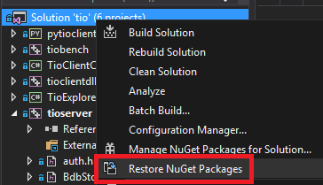 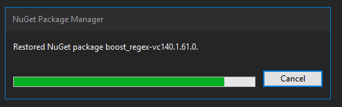 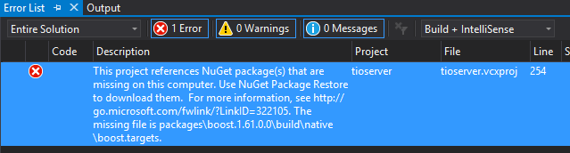Os pacotes do projeto ficam todos na raiz do diretório da solução na sub-pasta packages. Observando o que foi baixado lá, verifiquei que a versão do boost estava ok: ele havia baixado a 1.61 como pedido, mas o erro dizia respeito justamente a um desses pacotes.
C:\Projects\tiodb>dir /b packages boost.1.61.0.0 boost_chrono-vc140.1.61.0.0 boost_date_time-vc140.1.61.0.0 boost_filesystem-vc140.1.61.0.0 boost_program_options-vc140.1.61.0.0 boost_regex-vc140.1.61.0.0 boost_system-vc140.1.61.0.0 boost_thread-vc140.1.61.0.0
O maior problema disso é que não há muitas opções na IDE que resolvam. O arquivo packages.config deveria manter essas dependências, o que de fato ele faz. As opções do projeto (as abinhas do Visual Studio onde ficam as configurações) não possuem nada relacionado ao NuGet.
<?xml version="1.0" encoding="utf-8"?> <packages> <package id="boost" version="1.61.0.0" targetFramework="native" /> <package id="boost_chrono-vc140" version="1.61.0.0" targetFramework="native" /> <package id="boost_date_time-vc140" version="1.61.0.0" targetFramework="native" /> <package id="boost_filesystem-vc140" version="1.61.0.0" targetFramework="native" /> <package id="boost_program_options-vc140" version="1.61.0.0" targetFramework="native" /> <package id="boost_regex-vc140" version="1.61.0.0" targetFramework="native" /> <package id="boost_system-vc140" version="1.61.0.0" targetFramework="native" /> <package id="boost_thread-vc140" version="1.61.0.0" targetFramework="native" /> </packages>
Então não tem jeito. Há algo de podre dentro desse projeto e o próprio Visual Studio não vai resolver. Grep nele!
C:\Projects\tiodb>grep -r -i "boost.*1.61" --include=*proj .
./server/tio/tioserver.vcxproj: <Import Project="packages\boost.1.61.0.0\build\native\boost.targets" Condition="Exists('packages\boost.1.61.0.0\build\native\boost.targets')" />
./server/tio/tioserver.vcxproj: <Error Condition="!Exists('packages\boost.1.61.0.0\build\native\boost.targets')" Text="$([System.String]::Format('$(ErrorText)', 'packages\boost.1.61.0.0\build\native\boost.targets'))" />
...
Note (e é preciso prestar atenção!) que o projeto server/tio/tioserver.vcxproj referencia a pasta packages como se ela existisse dentro do projeto. Porém, como já sabemos, ela existe na raiz da solution, que fica duas pastas "para trás". Isso nos indica que talvez o NuGet ainda não esteja tão redondo e que um possível teste é mudar esses valores na mão e ver o que acontece.
gvim server\tio\tioserver.vcxproj :%s/packages\\boost/..\\..\\packages\\boost/g :wq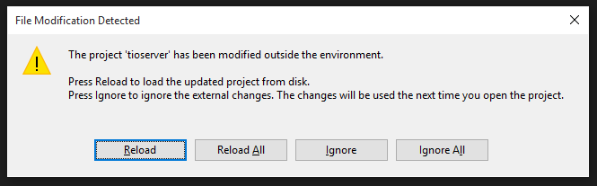
1>------ Build started: Project: tioclientdll, Configuration: Debug x64 ------ 2>------ Build started: Project: tioserver, Configuration: Debug x64 ------ [tiodb]: https://github.com/tiodb/tiodb [tiodb] e após baixar todos os pacotes do [NuGet]: https://docs.microsoft.com/pt-br/nuget/consume-packages/overview-and-workflow 2> tioserver.vcxproj -> C:\Projects\tiocoin\tiodb\server\tio\..\..\bin\x64\Debug\tio.exe 2> tioserver.vcxproj -> ..\..\bin\x64\Debug\tio.pdb (Full PDB) ========== Build: 2 succeeded, 0 failed, 3 up-to-date, 0 skipped ==========
Recarregado o projeto no Visual Studio após a intervenção cirúrgica, tudo voltou a funcionar. A lição de hoje é: nunca confie completamente em uma IDE. Às vezes o bom e velho grep e o bom e velho editor de sua escolha podem resolver uma situação.
# Native Floripa 2017: Palestras
Caloni, 2017-02-09 [up] [copy]Já está disponível na grade de palestras do Native Floripa 2017 o conteúdo que será ministrado nos dois dias do final de semana dias 18 e 19 de março de 2017 em Florianópolis, na Associação Catarinense de Empresas de Tecnologia (Rodovia SC 401, Km 4, Bairro Saco Grande, Florianópolis, SC, CEP 88032-000, Telefone (48) 2107-2700). As palestras englobam trabalhos acadêmicos, teoria da computação, demonstração de bibliotecas e práticas comuns no dia-a-dia, treinamentos em engenharia reversa, embarcados e internet das coisas, e toda coleção de linguagens bizarras que você poderá conhecer. Ah, e moedas digitais (eu! eu!) =)
- Conectando EFL Models a Elementary Widgets
- Usando C++14 com CPUs ATmel (Arduinos)
- Acessando código nativo em Elixir
- Apache Mynewt: An OS and Tools for the Embedded World
- Desenvolvimento de sistema visão computacional de tempo real usando Multithreaded IO-Pipeline com C++ e OpenCV
- Soletta: Closing the IoT Development Gap
- __Engenharia Reversa para Principiantes e Demo: Quebrando Dicionário Houaiss (eu! eu!)__
- Go C, Go! - Interoperando Go e C
- Por que Rust?
- Implementação Inicial da RFC 6897 (MP-TCP)
- Não use ponteiros!
- Desenvolvimento de ferramentas Open Source para sistemas embarcados
- Visualizando imagens médicas com C++
- Modificando Clang para gerar arquivos coq do proof assistant para pré e pós-condições
- Visão computacional com OpenCV: implementando uma simples interface por webcam
- Apresentando a biblioteca cryptox
- __Como criar moedas digitais em casa com C++ (eu! eu!)__
- IButterFree: Uma biblioteca gráfica opensource para arquiteturas enxutas
- Implementando algoritmos ao estilo da STL
Se isso ainda não tocou nenhum sino em sua cabeça, talvez a lista dos palestrantes o faça:
- Alan Silva
- Carlos Eduardo Gesser
- Expertise Solutions
- Fabio Galuppo
- Fabio Utzig
- Felipe Magno de Almeida
- Gustavo Sverzut Barbieri
- Larry Lira
- Lauro Moura
- Luiz Barreto
- Marcelo Castellani
- Patrick José Pereira
- Renan Prata
- Rodrigo Madera
- Vitor Sousa Da Silva
- __Wanderley Caloni (eu! eu!)__
As inscrições já estão abertas e o preço me impressionou. Para um evento com dois dias, está bem mais acessível que o TDC.
# UEFI: dê adeus à MBR
Caloni, 2017-02-09 [up] [copy]Após depurar a BIOS e a MBR, eis que surge a UEFI: os GUIDs para SOs instalados no seu HD. Quantas siglas, não é mesmo?
A BIOS (Basic Input/Output System, Sistema Básico de Entrada e Saída) é o sistema-base que se comunica com o hardware diretamente e faz a ponte entre várias interrupções e o sistema operacional (se houver um). Uma das funções iniciais da BIOS era encontrar qual a MBR (Master Boot Record, Registro do Boot Mestre) válida para entregar o controle de um pedaço de código de 512 bytes (um pouco menos) cuja função clássica era procurar em uma tabela de quatro entradas dentro dela mesma qual o SO que está ativo. A partir daí o código da MBR passava o controle para a MBR da partição ativa, que deveria conter o bootstrap do sistema operacional (naquela época bootstrap significava outra coisa).
Isso gerava várias confusões em um sistema multi-SO, algo que começou a se tornar constante depois que o Linux e o Windows de verdade (NT) veio à tona, com gerenciadores de boot no próprio SO que possibilitava que o Windows 98 conseguisse pular seu controle para um Windows NT ou 2000 e também para um Conectiva Linux. Quando as coisas davam errado era só pegar o CD de instalação de um desses e começar tudo de novo.
Ou usar o Disk Editor, a famigerada ferramenta do Norton que já salvou a vida de muitos computadores aí afora. Eu me incluo na lista de salvadores durante o tempo que fiz a manutenção de um sistema de criptografia de HD. Usar o Disk Editor era basicamente navegar pelos bytes iniciais do HD principal para encontrar qual lógica do boot estava errada. Poderia ser um erro na tabela de partições ou um modo de endereçamento que não suportava partições muito longe do início (a tabela de partições era bem limitada; abaixo ela está selecionada).
Com a UEFI (Unified Extensible Firmware Interface, Inteface de Firmware Extendido Unificado) a MBR e seus 500 bytes perdem sua vez e no lugar surge uma partição inteira, onde os SOs são organizados não por tipos de entrada, mas por GUIDs únicos (números muito grandes que em teoria não são repetidos nunca). Não há mais a chance de modificar os bytes iniciais do boot para poder realizar alguma manipulação mágica, como gerenciar os diferentes SOs. A UEFI foi feita para isso, e não apenas para SOs locais, mas qualquer tipo de extensão de firmware (o código que reside direto no hardware e manipula correntes e leds). Note como a tabela de partições em um ambiente EFI não possui entradas válidas, e o setor logo em seguida é o início de sua partição.
A UEFI diz que há suporte ao modo antigo MBR. Isso é feito mantendo o primeiro setor disponível para escrita. Uma conversão possível seria editar a tabela de partições inserindo onde está a partição de um SO e inserindo um código padrão do MBR no lugar. A mudança do tipo de boot pode ser feito na BIOS (é o modo legado), mas se for trocada ela usará a MBR para bootar, então é necessário que ela esteja funcionando.
# LEGO Batman: O Filme
Caloni, 2017-02-12 <cinema> <movies> [up] [copy]Dos mesmos "mestres construtores" de Uma Aventura LEGO, este Lego Batman vem para iniciar uma franquia já sugerida no original. E vira um dos melhores filmes de Batman sobre filmes de Batman já idealizados por uma criança!
A história usa e abusa de todas as histórias anteriormente contadas sobre o homem-morcego e se aproveita do traço mais conhecido do herói: seu isolamento emocional. Não se trata de pouca coisa quando você tenta inserir em um filme supostamente infantil -- e em muitos aspectos, de fato é -- conceitos mais maduros, como a necessidade de se conectar com outros seres humanos e o senso de companheirismo e cooperação que faz com que nós sejamos mais fortes. E ao mesmo tempo, o senso de rivalidade em que um Batman e Coringa contracenam vários DRs onde o objetivo de reconciliação é cada um dizer para o outro: eu te odeio.
Depois de mais uma vez salvar Gothan City, acompanhamos uma longa e monótona sequência do morcegão de volta em sua mansão/ilha, onde se esconde sob a alcunha do bilionário Bruce Wayne. O sujeito chega falando oi para seu computador, esquenta uma lagosta no microondas (e aguardamos os segundos de espera), e come o rango em longas seis mordidas em volta de seus brinquedinhos marítimos (bat-navio, bat-tanque, bat-porta-aviões). Quando Alfred, o mordomo e figura paterna, chega, ele leva uma voadora. É dessa forma com que representamos para uma criança quando alguém não está acostumado a ter pessoas não-inimigas por perto.
O batalhão de roteiristas que criou os hilários diálogos e situações do filme usam talentos das mais diferentes fontes, como Orgulho e Preconceito e Zumbis (Seth Grahame-Smith), Community (Chris McKenna), American Dad! (Erik Sommers), Os Estagiários (Jared Stern), o estreante John Whittington e o diretor do episódio de Star Wars III do Frango Robô, Chris McKay. Isso quer dizer que seria altamente improvável que o resultado da história em si fosse coesa e de certa forma empolgante. E de fato não é. Contudo, há tantas sacadas criativas e tantos elementos em tão pouco espaço de tela (vemos Gremlins, Voldemort, King Kong e Sauron na mesma cena) que se torna um resultado frenético e uma homenagem totalmente aberta a uma espécie de criatividade juvenil que ainda contém ácido nos comentários mais velados (como o Batman ir no orfanato jogar doces e dinheiro para a criançada).
Utilizando o mesmo universo idealizado em Uma Aventura Lego, aqui Gothan City é mais uma maquete construída sobre uma mesa ("não há nada abaixo da cidade, se ela se partir cairemos no abismo profundo") e onde alguns elementos (mas quase nenhum) oferece um pouco de ludismo, como o som dos disparos das armas feitas com a boca. No entanto, o que está sendo explorado mais aqui é de fato as brincadeiras metalinguísticas a respeito dos trabalhos anteriores do Batman, que vão desde o Batman VS Superman até... o seriado dos anos 60!
Se muitos trabalhos anteriores do homem-morcego conduziam seu estudo de personagem de maneira excessivamente fria e séria -- como a trilogia de Christopher Nolan -- este Lego Batman sabe o que quer: apenas divertir. Ele se ancora na questão do sentimentalismo, o que soa clichê, mas o seu formato de brincadeira quase nos leva a acreditar que isso também faz parte do jogo. De certa forma, ele flerta muito com as regras de uma historinha que contamos para nós mesmos quando brincamos na infância, e arrisca soar manipulador no meio do caminho. Mas isso é um pecadilho se compararmos com o que eles arriscam aqui. E se arriscar for uma virtude, este pode até ser um dos mais ambiciosos filmes de super-herói do ano. Vai duvidar?
# Convertendo Windows de UEFI para MBR
Caloni, 2017-02-13 [up] [copy]Quando você pesquisa sobre isso no Google o que mais encontra é ferramentas "gratuitas" que prometem fazer a conversão ou algo do gênero. No entanto, há um procedimento simples em que o próprio Windows pode corrigir os problemas oriundos da conversão do boot UEFI/GPT. Depois, é claro, que você usar uma outra ferramenta esperta open-source =)
Entre as diferentes distros do Linux há uma chamada SystemRescueCD que é cheia dos paranauê para manutenção de micros. Entre eles há uma ferramenta chamada testdisk que tem a "proeza" de sair buscando partições perdidas e reescrever o MBR (seja o código ou a tabela de partições). É uma ferramenta simples, interativa e ágil. É ela que deve ser usada para resgatar as partições da máquina após configurar a BIOS para voltar a bootar no modo legacy.
Depois de feita essa manipulação é a vez do CD do Windows, que deverá estar em mãos porque o Windows simplesmente não irá mais bootar. A instalação feita através do modo UEFI não instala o BOOTMGR, o gerenciador de boots do Windows. Isso porque ele não é usado, já que é a partição UEFI que se torna responsável por gerenciar o boot dos SOs presentes.
Mas isso não significa que essa instalação do Windows está perdida. Através de dois boots com o CD, ambos escolhendo o modo de restauração (Repair e Repair at Startup) é possível fazer com que o Windows ache o problema (o bootmgr faltando) e "conserte" a instalação.
No primeiro boot o Windows irá achar um problema inicial na própria instalação, no segundo boot ele já encontra a instalação. E, acreditem só, ele descobre que o BOOTMGR está faltando!
E a partir daí a partição UEFI se torna inútil, embora ainda exista no início do HD, já que o boot legacy usa o velho esquema de usar o código da MBR e a partir daí chamar a partição ativa, que agora será a Windows.
Essa manipulação do boot pode dar algum trabalho, mas é gratuita e com todos os passos devidamente documentados. E não há mágica: reconstrução da MBR seguido de restauração de um SO pré-existente (Windows, no caso).
# Manchester À Beira-Mar
Caloni, 2017-02-13 <cinema> <movies> [up] [copy]Este é um filme que se constrói inteiro na performance do seu ator principal, Casey Affleck, que estabelece um protagonista (Lee Chandler) traumatizado com um realismo que só consegue ser sentido no seu último momento na companhia de sua ex-esposa (uma Michelle Williams igualmente competente e com muito menos tempo de tela). Também é um filme que te leva fácil, pois tem uma história fácil para contar. São as entrelinhas que interessam, e se fossem um pouquinho mais grossas dariam um filmaço. Mas o filme prefere ser ele mesmo e se tornar com isso impecável.
Essas entrelinhas em torno da historinha são sentidas em todo momento através dos seus personagens secundários. É aquele momento incômodo no corredor quando Lee recebe a notícia que seu irmão morreu e ele não estava com a doutora de praxe (ela estava de licença, pois engravidou de gêmeas, referência ao trauma do próprio Lee). Também é aquele momento em que, diante de seu testamento, Lee recusa aceitar o pesadelo que terá sendo o tutor de seu sobrinho. E, com certeza, é aquele momento em que ele acompanha a esposa sendo levada para a ambulância, quando as rodas de sua maca insistem em travar. Esse pequeno detalhe é o melhor exemplo de como o diretor Kenneth Lonergan consegue extrair o incômodo de todas essas situações sem apelar para o dramalhão, preferindo abusar dos atos falhos das pessoas em torno de Lee Chandler.
Não precisamos nem que nos seja dito que naquela cidadezinha próxima de Boston todos conhecem todo mundo, e todos conhecem principalmente as tragédias dos seus vizinhos, parentes, conhecidos. Isso inclui o que aconteceu com Lee e sua família, mas cuja revelação está longe de ser tão magnética quanto esses pequenos detalhes de seu retorno à vila onde tudo aconteceu.
A atuação de Casey Affleck é extremamente importante porque ele não pode trair o filme e entregar uma performance "over". Isso quer dizer que, mérito de quem seja, suas costas levemente curvadas, sua cabeça levemente pendurada e sua voz ligeiramente rouca e incapaz de falar mais alto que um sussurro são parte integrante desse estudo de personagem fascinante, a atuação perfeitamente oposta vista em Nebraska (e ambas perfeitas). E é fascinante porque o universo se dobra na estranheza de nós humanos diante da morte, essa companheira e seguidora eterna. Quando acontece, todos ao redor mudam. Às vezes para sempre.
Contada através de músicas que evocam ao mesmo tempo sentimentos perenes, cerimônia e de certa forma a fragilidade da própria vida, Manchester By The Sea é uma ode à história comum e que empolga através da repetição. Vemos o sobrinho de Lee em suas investidas sexuais e o incômodo do próprio Lee em ter que interagir com as pessoas. Ele tenta dizer "obrigado" como uma forma de pontuar a interação, já que este homem está obviamente quebrado por dentro, não sabe como fazer para se comunicar.
E o filme tampouco tenta facilitar para ele. Escrito também por Kenneth Lonergan, ele se diverte com a mesmice que impera na história, mas e ao mesmo tempo a avança. É uma maneira criativa de conseguir atrelar a narrativa em um protagonista cujo tempo parou por toda a vida.
# BugiGangue no Espaço
Caloni, 2017-02-14 <cinemaqui> <cinema> <movies> [up] [copy]BugiGangue no Espaço é mais uma tentativa do cinema brasileiro -- e com dinheiro brasileiro -- nas animações e na tecnologia 3D. O resultado é mais um filme que mira na mediocridade para nunca sair dos trilhos. Sua falta de ousadia no roteiro só rivaliza com sua capacidade de referenciar obras muito mais ambiciosas como Star Wars, Star Trek, E.T.. Sua animação cartunesca não oferece quase nada que se destaque de qualquer vídeo do YouTube. E o seu humor pitoresco quase traz à tona o instinto nacional de ser o eterno cão vira-latas das super-produções.
A história é um fiapo, o que pelo menos não dá espaço para (muitas) incongruências. Uma turma de crianças se envolve em uma confusão na escola e precisam passar o fim de semana juntos preparando uma maquete do sistema solar, quando uma nave alienígena cai em seu quintal. Todos ajudam a consertar a nave em troca da tal maquete e de uma aventura espacial onde o destino do universo está nas mãos da raça mais subestimada de todas. Juntos eles precisam libertar a congregação do tirano que pretende instaurar uma ditadura intergaláctica nos mesmos moldes de Darth Vader.
Ou quase, já que pelo jeito ele consegue seu feito no estilo golpe de estado: chegou lá e tomou. Aparentemente não há nenhum exército de nenhum outro povo, o que vai de encontro com as comemorações de 100 ciclos de paz entre os povos, onde é dito que as nações precisam cada vez menos de exércitos. Mas... nenhum?
Ale McHaddo é o diretor, roteirista e idealizador. Você talvez não o conheça, mas com certeza deve conhecer um CD-ROM de um jogo chamado Gustavinho em o Enigma da Esfinge, onde a atriz Marisa Orth fazia o papel da esfinge em um jogo de computador interativo. Se você não se lembra, deve ser jovem demais. De qualquer forma, McHaddo, ou Alexandre Machado, está no ramo há décadas, já tendo produzido e vendido inúmeros trabalhos feitos em computador, como "Osmar, a Primeira Fatia do Pão de Forma" e "A Lasanha Assassina". "Nilba e os Desastronautas" foi o primeiro desenho 100% nacional que passou na televisão norte-americana, e "BugiGangue" agora é mais uma de suas aventuras espaciais, dessa vez com o atrativo de ser em 3D.
Um 3D que, convenhamos, está aí mais para chamar a atenção do que em função da história. Com exceção dos créditos iniciais, onde vemos o artifício sendo usado para navegarmos entre pontos brancos, supostamente estrelas, e letreiros computadorizados, o resto do filme o aplica de maneira rasa, quase não sendo possível notar o momento onde os óculos são necessários.
O mesmo pode-se dizer das referências feitas de uma miríade de personagens, espaciais ou não. Esses personagens ou obras aparecem mais para tentar erguer nossa atenção através de algo conhecido em vez de fazer parte da história. Dessa forma, quando vemos durante a perseguição inicial uma figura que lembra alguém como Seu Madruga do seriado Chaves indo tomar um banho de piscina, a cena vira uma mistura entre cartunesco, humor pastelão e vergonha alheia.
É comum trabalhos menores referenciarem os maiores, mas aqui há um exagero em tentar tornar a aventura espacial em uma espécie de Star Wars para kids. Não há explicação, por exemplo, de por que um determinado personagem acaba virando rei de um povo em um planeta longínguo -- nem o que eles estão fazendo nesse planeta -- nem porque a raça mais subestimada "do universo" pelo tirano é a primeira que lhe vem à memória quando ele descobre estar sendo atacado. Da mesma forma, enquanto há trabalhos que sabem usar o clichê como humor, como Uma Aventura Lego, em que a lenda do escolhido vira uma alusão ao próprio clichê ("ah, agora tem uma lenda"), aqui ela vira uma frase jogada ao acaso e apenas para tentar dramatizar uma situação ridícula.
E mesmo que seja engraçado referenciar obras como Senhor dos Anéis e Star Wars, a trilha sonora usa isso como muleta a todo momento, fazendo questão de comentar cada movimento do filme com exageros. A música não consegue sequer evitar soltar o toque de O Poderoso Chefão quando um personagem diz que "irá fazer uma oferta que eles não poderão recusar", terminando por vez de atingir o fundo do poço das referências gratuitas.
Já tecnicamente o trabalho possui o problema dos close-ups. O filme é incapaz de esboçar expressões nas caras de seus personagens, tendo que confiar em uma equipe mista de dublagem, com bons e maus momentos (Danilo Gentili, por exemplo, é um mau momento, mas que com o tempo acostuma-se). Isso se torna particularmente frágil no início da projeção, quando as crianças estão sendo apresentadas. Já durante as inúmeras cenas de batalhas e naves é um problema menor, ficando prejudicial apenas a falta de detalhes gráficos.
Porém, aqui o diretor Ale McHaddo consegue desempenhar um papel satisfatório. Enquanto estamos vendo cenas de ação e planos mais gerais, seja por imitação de outras obras ou competência técnica, o filme consegue fluir e quase nos esquecemos de suas deficiências narrativas. No momento em que os personagens precisam falar algo importante ou contar mais uma piada ruim, o filme desaba um pouquinho mais.
Dessa forma, BugiGangue é um experimento interessante, mas nunca consegue se desvencilhar de suas limitações técnicas e artísticas. O uso do computador aqui mais que atrapalha que ajuda, já que ele é mais usado como um fim (produzir um filme) do que um meio (esboçar uma ideia). E, se olharmos mais de perto, é um filme que não se separa o suficiente de um medíocre jogo eletrônico.
# Até o Último Homem
Caloni, 2017-02-15 <cinema> <movies> [up] [copy]Este é um filme que presta uma homenagem mais do que merecida a um homem que salvou diversas vidas durante uma batalha sem atirar uma bala. Mel Gibson, porém, pega o roteiro de Robert Schenkkan e Andrew Knight e transforma em algo muito, muito maior. Este é um filme de guerra que realiza uma ode à não-guerra. Ele usa levemente a simbologia cristã, mas seu foco são os princípios morais que regem a carnificina legalizada que é um campo de batalha, e com isso humaniza a condição dos soldados massacrados, mostrando o que tiver que mostrar para passar sua mensagem. É um pouco ufanista? Talvez. Mas quem irá culpá-lo, já que o fanatismo do Japão medieval tornava os soldados inimigos verdadeiros mensageiros do demônio.
A história é uma biografia de Desmond Doss, filho de um pai alcoólatra (Hugo Weaving) que lutou na guerra anterior e que vive o pesadelo de odiar a si mesmo por suas ações e de ter sido o único sobrevivente de quatro grandes amigos. Consequentemente trata sua família com violência e sequer lhe chama a atenção seus dois filhos brigarem no quintal de sua casa. Desmond passa então pela experiência de ter quase matado seu irmão, e anos depois se regozija de ter conseguido salvar um garoto atropelado e por ter conhecido a bela enfermeira Bertha, o amor de sua vida.
Se essa narrativa lhe soa familiar, é porque é. Soaria até clichê, se não fosse pela interpretação quase sem cacoetes de um Andrew Garfield empenhado em dar o seu melhor para construir essa persona contraditória que vai à guerra sem o objetivo de matar, mas dona de valores pelos quais não se dobra. Desmond é de uma família de adventistas do sétimo dia, que é contra a violência e de trabalhar aos sábados. Porém, vendo o horror da guerra, ambos os irmãos se alistam, sendo que Desmond como "objetor consciente", o que seria uma forma de se livrar do alistamento, mas que aqui em sua mente se traduz em ir para a guerra salvar vidas, e não tirá-las.
A primeira parte do filme é sobre sua provação no exército, contrariando como funcionam as leis, a cadeira de autoritarismo e o próprio sentido da guerra. É a parte mais cativante, vital para o sucesso da segunda parte, pois é aí que conhecemos o quão forte são as convicções de Desmond, que chega a perder seu casamento e estar à beira de uma prisão marcial por contrariar as bases do assassinato estatal legalizado. É nesse momento que vemos, por exemplo, que até um ator acostumado ao over como Vince Vaughn, como Sargento Howell, consegue se conter (ou se focar) em um papel fácil. O filme exibe um elenco equilibrado e competente, dotados de diálogos sucintos que tornam o roteiro um trabalho intrincado de pistas e recompensas (as recompensas apenas virão na segunda parte do filme).
Já a segunda parte não se traduz em um banho de sangue, mas em duas sequências que espelham o que o diretor Mel Gibson está querendo dizer. Se na primeira há um trabalho primoroso de montagem e edição (John Gilbert), onde a tensão coexiste com uma névoa diabólica em um campo de batalha onde chegar até um bunker pode prender a atenção do espectador indefinidamente, na segunda cena, muito mais estendida e lenta, há a sequência-chave que justifica o filme como um todo.
A perfeição técnica reina sobre Até o Último Homem, desde sua fotografia límpida e ao mesmo tempo construída sobre horizontes indefinidos e misteriosos e, por que não, ameaçadores, até a trilha sonora que evita soar batida pontuando com perfeição o significado de cada cena, com seu dramatismo e as tomadas de Gibson que deixam gritante que este é um filme anti-guerra, justamente como o próprio Desmond gostaria, e como todo homem de bom senso, religioso ou não.
Em alguns momentos notamos um quê de exagero nos tons que o diretor adota, mas o que fica como lembrança é um filme sólido, que consegue oscilar entre o drama e a ação, desde que ambas consigam contar uma história de imersão completa. Desmond Doss será uma figura eternamente lembrada como ser humano, mas principalmente, como símbolo de como é pequena uma espécie que se digladia como selvagens a mando de governos obtusos que ignoram todo o sangue derramado entre as trincheiras.
# A Jovem Rainha
Caloni, 2017-02-16 <cinemaqui> <cinema> <movies> [up] [copy]A Jovem Rainha tem vários assuntos para tratar durante o conturbado reinado da rainha Cristina no império sueco do século 17, mas não consegue se adequar ao tom mais apropriado. Se em alguns momentos gera o humor incidental da típica loucura dos monarcas, em outros tenta puxar a grandiosidade dos acontecimentos históricos, e no meio do caminho flerta perigosamente com um episódio de seriado de TV.
Enquanto a efervescência de conhecimento na Europa gerava mais e mais conteúdo científico e filosófico, seu braço fora do domínio da Igreja Católica -- incluindo a Suécia -- se mantinha preso ao conceito de determinismo de Lutero, fundador do protestantismo. É nesse clima que seu rei falecido é mantido por dois anos embalsamado pela insana rainha, enquanto uma jovem princesa de seis anos finalmente ocupa o papel de futura monarca (quando atingir a maioridade). Seu tutor a tenta manter na doutrina protestante, mas a enxurrada de conhecimento a leva em direção a René Descartes, filósofo da época que estava desconstruindo nossa forma de enxergar a realidade.
Considerada uma das mulheres mais instruídas de sua época, Cristina, nutria desde sua infância e adolescência o interesse por livres pensadores, particularmente tocada pela maneira de René Descartes em enxergar as emoções humanas, ela o adota como princípio para seu país, em um conturbado discurso de posse, voltado para a instrução de um povo ainda iletrado e isolado das descobertas científicas da Europa. Porém, estes planos estão longe do que é esperado de umA monarcA, como podemos observar pela busca incessante de seus pretendentes; não só pela sede de poder, mas pelo puro pragmatismo político: sem um herdeiro, o futuro do reino fica nas mãos da caprichosa rainha. Sendo assim, sua função mais importante seria ter um filho, algo que ela renega já que está apaixonada por uma condessa, condecorada como sua dama de companhia. Ou seja, nem de longe as religiões da época poderiam nutrir a sede de conhecimento que Cristina tinha pelas emoções humanas; não tanto quanto seu filósofo francês favorito.
O filme em partes é construído como um relato histórico, quase documental, mas não tenta explicar os rumos da nova rainha, além de ser muito ruim na contagem do tempo (seu reinado durou cerca de 20 anos, mas o filme narra pouco mais que alguns meses). Os eventos de sucedem em um movimento caótico, quase que tirado dos livros de história, mas ao mesmo tempo é fascinante acompanhar essa viagem no tempo através de uma direção de arte voltada mais para o realismo da época, onde castelos eram lugares grandiosos, porém igualmente miseráveis ao resto da população. Corredores e becos estreitos do castelo revelam ou um realismo contundente ou uma falta de orçamento que puxa para o lado televisivo do projeto. Como prova disso observe como um vilarejo onde a rainha de encontra em um momento possui tão poucas casas e pessoas, e onde a rua principal começa e termina no mesmo lugar.
Porém, ainda assim se torna curioso acompanhar as consequências de uma jovem rainha em tentar educar seu povo em uma época onde livros eram um artigo de luxo, tanto que lotar uma biblioteca exigia buscar trabalhos de várias regiões escritos nas mais diversas línguas, de grego e árabe a espanhol e francês. O que nos leva também também a considerar que o uso do inglês no filme torna tudo muito televisivo e falso (pessoas falando inglês em plena Suécia naquela época parecia algo totalmente fora de contexto). Ao mesmo tempo que os diferentes idiomas fornecem pistas das diferentes formas de pensar (e da cisão religiosa no cristianismo), se torna uma auto-sabotagem um trabalho desses estar em um idioma não apenas hollywoodiano, mas simplesmente errado historicamente.
Enquanto isso, detalhes técnicos exagerados, como a trilha sonora, embora tenha o bom tom de usar os instrumentos da época como principais, como o cravo, tenta pontuar excessivamente as cenas, dramatizando além da conta. Em outros momentos soa completamente invasivo, oscilando de uma cena romântica para a ação, atrapalhando a primeira.
Porém, o pior de tudo mesmo é o filme nunca se preocupar com um conflito principal. Sim, sabemos que é importante para um governante governar, mas a tensão gerada pela guerra com os alemães, por exemplo, não passa de breves falas de seus conselheiros e uma taça virada ao contrário em cima de um mapa. Também sabemos que a religião era uma bandeira muito mais importante na época do que hoje, uma época em que o homem mais poderoso do mundo era o Papa. Também sabemos que o homossexualismo da rainha, além de ser um empecilho na geração de alianças e herdeiros, seria inaceitável na época.
Mas tudo isso é citado de passagem muitas vezes, sem nunca ser considerado o grande conflito que o filme deve solucionar. Aliás, não é possível entender as motivações da rainha direto dela, já que os diálogos mudam de tom a todo momento e a atriz que a interpreta (Malin Buska) resume seu personagem a caras fechadas e aumento de voz. Sua interpretação sedutora é particularmente cômica, rivalizando com Bella Swan de Crepúsculo, o que definitivamente não é um elogio.
# Cinquenta Tons Mais Escuros
Caloni, 2017-02-16 <cinema> <movies> [up] [copy]Eu não sei se a bronca pela série de filmes com Christian Grey e Anastácia Steel (esses nomes são bons, não?) é porque as feministas ficam com nojo de um casal normal, com problemas como todo mundo, e com preferências sexuais particulares (como todo mundo) ou elas abraçaram, assim como os conservadores, a noção patética que existe apenas uma forma de ser feliz, e ela não pode de maneira alguma ter relação com a vida de um bilionário de sucesso. Principalmente se ele trata suas mulheres como cãezinhos submissos. Se bem que, em se tratando de uma vida de luxo e segurança, qual o problema de dar alguns latidos e levar algumas palmadas de vez em quando?
Bom, minha bronca com a série é diferente. Pra mim a primeira parte da "saga" (tem essa mania agora de chamar tudo de saga, não?) soa, de vez em quando, exatamente como o primeiro filme da saga Crepúsculo: uma comédia incidental, que funciona como comédia, mas... não era bem esse o objetivo. Já no caso desses Cinquenta Tons Mais Escuros, ele soa como uma novelinha pior que os romances apimentados de Sabrina, os livretos mais populares entre as senhoras na menopausa.
Pior em que sentido? No pior dos sentidos para um cinéfilo: nada acontece. O filme é uma (bem) longa introdução que nunca termina. E para disfarçar um pouco de tensão, uma arma é disparada e um helicóptero sofre uma pane.
Não que ver um casal desenvolvendo sua relação não possa ser fascinante, como o diretor Richard Linklater já nos provou em sua Trilogia do Amanhecer através de Céline e o rapaz interpretado por Ethan Hawke. As discussões naturalistas, existencialistas e filosóficas dos personagens de Linklater são tão atraentes que poderíamos de fato acompanhar uma conversa dessas até o amanhecer, até o por-do-sol e até meia-noite. Já na trilogia cinza... não há nada de mais. É de fato um casal comum, e não consigo entender a fascinação das pessoas em torno desse lance de BDSM. Deve ser porque a vidinha da maioria é tão medíocre que um pouco de excitação soe escandaloso demais.
Já alguns poderiam torcer para que o casal fique junto, vencendo os traumas de Grey e os preconceitos vergonhosos de Ana. Eu nem tanto. Para mim, tanto faz. Até onde me consta, se pelo menos eles morressem, fossem mutilados ou passassem por uma mudança radical em suas vidas, a história seria melhor por ser mais agitada. Talvez um ménage... do jeito que está, "Tons Mais Escuros" é como assistir um Big Brother fantasioso com apenas duas pessoas. Ah, sim, acrescente uma louquinha rejeitada (sempre tem uma) e um chefe assediador de menininhas (sempre tem um). Algumas mensagens do filme ainda soam politicamente corretas, olhem só: cuidado com chefes safadinhos e, se você calhou de ser a masoquista em uma relação antiga, mas foi chutada, viva e deixe viver. Não, não corte os pulsos. Uma bela (e útil) mensagem, se for parar para pensar.
E qual seria a mensagem de sexo deste filme tão comportadinho? Talvez... Dakota Johnson não tem medo de mostrar seu corpo porque não há muita coisa para mostrar. O que remete justamente a como a trama tem se desenvolvido nesses dois filmes: vivemos juntos desse casal, principalmente do ponto de vista de Ana, mas no fundo vamos percebendo que não há nada para mostrar. Talvez nada sequer para aprender. Uma boa visita na Wikipédia talvez mate melhor essa curiosidade sobre BDSM. Nada como ter internet nos dias de hoje.
O roteiro de Niall Leonard baseado no romance de E.L. James baseado em seu fan-fiction baseado em Crepúsculo (tudo se encaixa agora) teme tirar detalhes ou diálogos que possam estar no livro, mas com isso torna o conteúdo extremamente hermético, já que apenas quem acompanhou todos os diálogos e acontecimentos do romance poderão degustar com prazer o filme como uma versão idealizada de suas mentes. Um filme deveria conter muito mais que um romance verbalizado.
E é por isso que é até louvável a competência do diretor James Foley (House of Cards) em conseguir tomar as rédeas de um projeto tão injusto, conseguindo no processo tornar quase todo o conteúdo de Niall Leonard palatável até para quem nunca ouviu falar em um fan-ficion. O ritmo de Foley é sóbrio ao conduzir um roteiro burocrático que precisa apenas converter parte das palavras de E.L. James em mais milhões de dólares "hollywoodizados". E o que dizer de uma fotografia esteticamente impecável de John Schwartzman (O Espetacular Homem-Aranha), que avança em tornar a película ligeiramente mais "dark" em um mundo sombrio e sanitizado, em que jovens bilionários do Vale do Silício decidem quem irá ajoelhar dessa vez, mas que também têm o direito ao amor por serem abusados e sofrerem traumas na infância (seria romântico se não fosse cínico).
Talvez "Cinquenta Tons" fosse um trabalho necessário nessa época cínica onde "o dinheiro não importa" mas "casaria com ele na hora, mesmo que apanhasse". Se analisarmos como um romance, ainda é impossível dizer o que Christian Grey viu em Anastasia Steele e vice-versa, exceto seus bons nomes. E o BDSM é um pequeno detalhe que conduz o fiapo de trama em torno deste interminável Big Brother versão reduzida, onde os personagens secundários são os verdadeiros tons de cores cinzentas, ao nunca se pronunciarem, e servirem como marionetes que conduzam a ação do casal. Afinal de contas, você não entrou nessa sessão para ver cenas picantes de sexo, entrou?
# Estrelas Além do Tempo
Caloni, 2017-02-17 <cinema> <movies> [up] [copy]"Fortran é uma nova e excitante linguagem usada por programadores para se comunicar com computadores..." -- começa lendo Dorothy Vaughan, líder das programadoras de cor da NASA. É difícil imaginar como uma espécie tão irracional a ponto de subestimar a mente humana baseada na cor e sexo do corpo que a carrega teria conseguido chegar até ao espaço. Assistindo a Estrelas Além do Tempo torna-se difícil imaginar como colocariam um homem branco orbitando o planeta se não fosse pela genial mente humana de Katherine G. Johnson, uma mulher, negra, e gênio.
Dirigido por Theodore Melfi a partir de seu roteiro e de Allison Schroeder, baseados no romance de Margot Lee Shetterly, Hidden Figures (o nome original) como filme de ação é quase uma continuação temática de Perdido em Marte. Só que agora em vez de acompanharmos um astronauta e cientista interpretado por Matt Damon visitaremos um escalão abaixo: o dos engenheiros e matemáticos que tornaram a própria viagem espacial possível. E isso em uma época onde "computador" era o nome dado a alguém, uma pessoa, que computava, ou seja, fazia cálculos. Havia uma sala cheia dessas pessoas. Os primeiros grandes computadores da IBM, os mainframes, que hoje cabem no bolso de cada um (chamamos de celulares), mas antes ocupavam uma sala inteira, estavam apenas começando a chegar, e ainda havia muito trabalho a ser feito manualmente. Havia tanto trabalho que a NASA estava disposta a, em plena segregação norte-americana, trazer tanto os cérebros caucasianos quanto os cérebros afro-descendentes para trabalharem juntos.
Quer dizer, "juntos" é um eufemismo mais do que forçado, já que havia a tradicional separação de salas, de bebedouros e de banheiros. E, no caso das mentes avançadas dos matemáticos, separação entre os cafés. Além disso, frequentemente sendo impedidas de subir em suas carreiras, as negras que ali trabalhavam ainda precisavam se subordinar a uma hierarquia de brancas, em que a imagem de Kirsten Dust como a "bitch" do local não poderia soar mais adequado.
É nessa atmosfera inóspita e pouco atraente que acompanhamos três mentes brilhantes avançarem em seus campos de estudo e trabalho e ainda por cima se desvencilhando da ignorância e do preconceito. Apenas apoiando uma à outra é que Katherine (Taraji P. Henson), Dorothy (Octavia Spencer) e Mary (Janelle Monáe) podiam suportar trabalhar entre os brancos e tocar suas difíceis vidas. E mesmo se conseguimos sentir essa dificuldade, quase nada no filme é dramatizado, e tudo faz muito sentido histórico. Não há muitas situações que reforcem a mensagem do filme, mas há muitas cenas que o diretor Theodore Melfi consegue resumir em poucos quadros a loucura que estávamos vivendo. Para mim, bastam os inúmeros momentos onde vemos o diretor dos matemáticos Al Harrison (Kevin Costner) conversando com seu time, todos de uniforme branco, e um ponto verde escuro, Katherine, isolada da massa zumbificada.
Porém, apesar de imensas equipes de cientistas para todos os lados, esse é um filme que acima de tudo celebra a conquista individual de cada um, e mesmo que ele tente levar no embalo uma raça inteira, fica óbvio que o mérito é completamente dessas garotas e sua determinação de fazer o que é certo: seguir adiante.
Há diversas interpretações competentes neste elenco, em que Kevin Costner é a mais simpática justamente por parecer mais real (do elenco masculino). No entanto, Taraji P. Henson entrega em Katherine uma figura complexa apenas através da sua caracterização de uma nerd de verdade, e não os estereótipos da série The Big Bang Theory (Jim Parsons, o "Sheldon", está no filme, BTW). O inabalável foco e determinação da garota apenas encontram empecilhos nos preconceitos em sua volta, e é não apenas tocante, mas compreensível em um nível que vai além da mera linguagem corporal, constatar o medo de Katherine sempre que entra em uma nova sala onde normalmente não seria aceita exceto para limpar as mesas. Os olhares de estranheza dos presentes é menos assustador do que a falta de cérebros no recinto, já que o que vemos é apenas o reflexo irracional de uma cultura desprezível por definição, e quando somos lembrados da importância dos esforços da NASA para com a nação ocorre um misto de reverência pela capacidade humana, mas desgosto por entendermos a quem esses esforços estão servindo.
Se dessa vez a trilha sonora de Hans Zimmer (A Origem) equipado por Benjamin Wallfisch (12 Anos de Escravidão) e Pharrell Williams (O Espetacular Homem-Aranha 2) é mais sutil, perene e eficiente, quem se sai maravilhosamente bem é a fotografia de Mandy Walker, sóbria e ao mesmo tempo eterna e saudosista, se beneficiando dos tons esverdeados e azulados dos anos 60, que enfeitam salas feitas de paredes cinzentas como uma marca de uma era. E vemos tudo isso ao mesmo tempo como um retrato vivo da época. O próprio figurino de Renee Ehrlich Kalfus, evitando distrações, consegue auxiliar os grandes momentos visuais do projeto, que em apenas um quadro resumem toda a grandiosidade daqueles momentos, visto do ponto de vista de quem mais importou para o programa espacial: os cabeções dentro de escritórios, lutando para descobrir a matemática certa que irá executar o impossível.
Sim, o filme é obviamente também sobre o racismo, e está entrando no Oscar infelizmente com a marca das cotas raciais depois do escândalo do ano passado, quando diziam que a premiação estava "muito branca". Sem estarem cientes, essas pessoas cometem o mesmo erro em subvalorizar o sucesso de cada indivíduo através de seu próprio esforço, influenciando medidas que soam como compensatórias, e isso sim de fato é um escândalo. Se Katherine tivesse sido selecionada por um sistema de cotas para adentrar no recinto cheio de caucasianos de uniforme branco, possivelmente a história seria outra, e ela não seria vista como a heroína que é hoje. Aliás, qualquer herói, independente de cor, raça e gênero, poderia jamais brilhar, se "dependesse" do aval da grande massa de ignorantes dando-lhe o privilégio de viver conforme regras coletivistas.
Há muita coisa que podemos aprender sobre a corrida espacial da NASA e sobre essas três garotas. E definitivamente nenhuma delas tem a ver com o poder do coletivo. É justamente o contrário que move a humanidade. Afinal de contas, é o coletivo que obriga um gênio a correr em seu serviço quilômetros todos os dias apenas para usar o banheiro. Se pessoas como Einstein e Euler tivessem nascido mulher e negra, provavelmente estaríamos um pouquinho ainda mais atrasados no programa espacial.
# Lion: Uma Jornada Para Casa
Caloni, 2017-02-17 <cinema> <movies> [up] [copy]Este é o filme indicado ao Oscar por fazer chorar. E por falar de um caso real, emocionante, e por falar sobre miséria e como os brancos são privilegiados. Se for um branco que fala inglês, então, nem se fala: a maioria do filme é falado em inglês.
E até por ser falado em inglês ele é selecionável para o Oscar.
Porém, esquecendo a parte emocionante da trama, o que dá mais gosto de ver em Lion é sua montagem. E a edição, já que a primeira metade realiza transições no tempo com uma facilidade que quase dispensa os letreiros. Mas a montagem, na segunda metade, consegue juntar a saudade e as memórias de Saroo com momentos imaginados por ele de quando deixou sua família. Aliás, deixou é eufemismo, pois o menino se perdeu e rodou o país de trem por dias. Sem condições de voltar e terminando em uma espécie de orfanato, é adotado por um casal de australianos.
A estrutura narrativa de Lion é muito simples de entender, e é para ser mesmo, já que sua maior força reside nos atores, e a atuação de Dev Patel é surpreendentemente coesa -- mesmo não sendo o tipo de ator que saia da rotina -- mas a maior descoberta é o pequeno Sunny Pawar (e o pequeno Saroo), que faz a alma do filme inteiro em sua primeira metade. E até Nicole Kidman tem seus bons momentos.
Mas, de qualquer forma, volto à montagem. O seu uso e os enquadramentos do diretor Garth Davis salvam o dia junto do editor Alexandre de Franceschi, pois transformam uma história que poderia ser até interessante, mas morosa, burocrática. Com uma câmera na mão, quase sempre focando os atores, e permitindo que apenas vejamos o cenários quando ele é relevante para a busca de Saroo, temos sua perspectiva como criança (fugindo à noite de adultos inescrupulosos) e como adulto, pois seu horizonte continua limitado por um verdadeiro muro de pedras.
Por fim, apresentando uma Rooney Mara de luxo como par romântico do protagonista -- e sem muito o que fazer -- Lion é um filme realmente de Oscar: empolgante, emocionante, e um drama da vida real. Uma história inacreditável que apenas por ser filmada já é digna de prêmios.
# Palestra: como criar moedas digitais em casa com C++ (kick-off)
Caloni, 2017-02-19 [up] [copy]Esta palestra tem como objetivo ensinar o que são moedas digitais, como o bitcoin, e cada passo necessário o algoritmo e implementação para torná-la real. Será utilizado C++ como a linguagem-base e o foco está mais na implementação do que na matemática ou no algoritmo. Assim como foi criado o bitcoin, o importante a aprender é como unir diferentes tipos de conhecimento e tecnologia em torno de um objetivo único, simples e prático.
A partir da criação da moeda surge a necessidade de facilitar o seu uso, um problema recorrente em todas as mais de 700 moedas digitais existentes no mercado e no laboratório, incluindo o bitcoin. Após a palestra teremos uma discussão de como levar a tecnologia ao usuário comum.
Construindo os princípios básicos
Para nossa moeda digital utilizaremos um sistema simples, rápido e prático para subir informações na memória de um nó (server) e repassar essas informações para outros nós, o tiodb. Este projeto mantém contêineres STL na memória da maneira mais enxuta possível e eles são acessíveis através do protocolo mais simples possível utilizando uma gama de linguagens (C, C++, Python, .NET).
A primeira coisa é compilar o projeto tiodb, que irá disponibilizar alguns binários em sua saída:
- __tio.exe__ é o executável central cuja instância mantém contêineres na memória;
- __InteliHubExplorer.exe__ é uma interface simples para navegar por esses contêineres;
- __tioclient.dll__ é a biblioteca dinâmica que pode ser usada por clientes para acessar o tio.
Podemos rodar o tio deixando ele usar os parâmetros padrão ou alterar número da porta e outros detalhes. Vamos executar da maneira mais simples:
C:\Projects\tiocoin\tiodb\bin\x64\Debug>tio Tio, The Information Overlord. Copyright Rodrigo Strauss (www.1bit.com.br) Starting infrastructure... Saving files to C:/Users/Caloni/AppData/Local/Temp Listening on port 2605 Up and running!
OK, tio rodando e ativo. Podemos navegar já pelos seus contêineres usando o InteliHubExplorer:

Por convenção os contêineres seguem um padrão de nomes que se assemelha a uma hierarquia de diretórios, e os nomes que começam com underline são internos/reservados. O contêiner __meta__/sessions, por exemplo, contém uma lista simples das conexões ativas deste nó.
A partir do servidor funcionando é possível criar novos contêineres e mantê-los, adicionando, atualizando e removendo itens. A partir dessas modificações outros clientes podem receber notícias dessas modificações e tomar suas próprias decisões.
Vamos criar e popular um contêiner inicial de transações com um GUID zerado, e a partir dele vamos adicionando novas "transações". Também iremos permitir o monitoramento dessas transações.
try
{
tio::Connection conn;
conn.Connect(server, port);
if (args.find("--build") != args.end())
{
tio::containers::list<string> transactionsBuilder;
transactionsBuilder.create(&conn, "transactions", "volatile_list");
transactionsBuilder.push_back("{00000000-0000-0000-0000-0000000000000");
}
else if (args.find("--add") != args.end())
{
tio::containers::list<string> transactionsAdd;
transactionsAdd.create(&conn, "transactions", "volatile_list");
string newTransaction = NewGuid();
if( newTransaction.size())
transactionsAdd.push_back(newTransaction);
else
cout << "Error creating transaction\n";
}
else if (args.find("--monitor") != args.end())
{
tio::containers::list<string> transactionsMonitor;
transactionsMonitor.open(&conn, "transactions");
transactionsMonitor.subscribe([]
{
int eventCode = stoi(containerEvt);
switch (eventCode)
{
case TIO_COMMAND_PING:
cout << "Ping!\n";
break;
case TIO_EVENT_SNAPSHOT_END:
cout << "Snapshot end\n";
break;
case TIO_COMMAND_PUSH_BACK:
cout << "New transaction " << value << " inserted\n";
break;
default:
cout << "Unknown event " << hex << eventCode << " with key " << dec << key << " and with value " << value;
break;
}
});
while (true)
{
conn.WaitForNextEventAndDispatch(0);
Sleep(1000);
}
}
else
{
tio::containers::list<string> transactionsReader;
transactionsReader.open(&conn, "transactions");
for( size_t transactionIdx = 0; transactionIdx < transactionsReader.size(); ++transactionIdx )
cout << "Transaction " << transactionsReader.at(transactionIdx) << endl;
}
break; // just testing and developing...
}
catch (tio::tio_exception& e)
{
Log("Connection error: %s", e.what());
break;
}
catch (std::runtime_error& e)
{
Log("Runtime error: %s", e.what());
break;
}
catch (...)
{
Log("Catastrophic error");
break;
}
Após executar esse código passando o argumento "--build" e atualizarmos o IntelihubExplorer poderemos ver o novo contêiner e seu conteúdo:
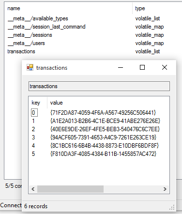É possível ler o código rodando o mesmo programa sem passar o argumento "--build":
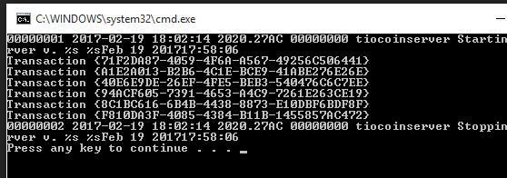Agora imagine que exista um cliente da tiocoin que está monitorando as transações deste servidor para verificar a partir de qual momento uma transação foi aceita (supondo que este contêiner possui as transações aceitas):
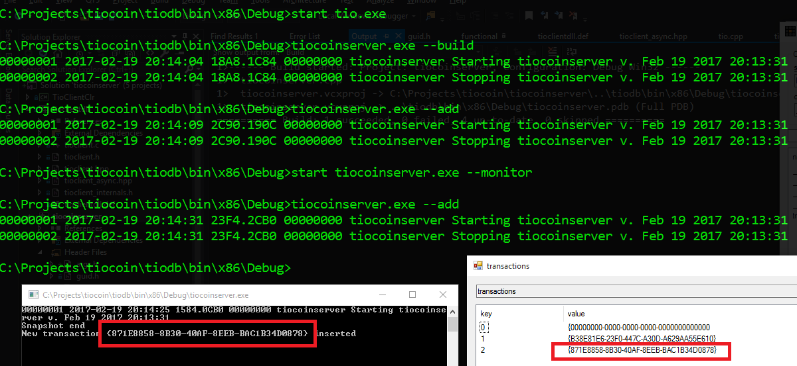Voilà! Agora temos um sistema inicial com um contêiner que irá manter os IDs de supostas transações de nossa moeda digital. Está compilando e está rodando, e em cima disso poderemos ir adicionando as funcionalidades.
Atenção: você poderá encontrar o repositório do tiocoin aqui.
[]: auto container, auto containerEvt, auto key, auto value
# O velho problema do project out of date do Visual Studio
Caloni, 2017-02-20 [up] [copy]Acho que todo mundo já passou por isso. Você compila todo o projeto bonitinho e no final, ao depurar, ele faz aquela velha pergunta: "o projeto está desatualizado: deseja compilar novamente?". Mas como assim? Eu acabei de compilar, não faz nem cinco segundos. Está quentinho, saiu do forno agora.
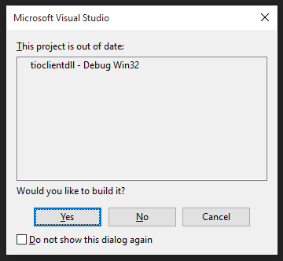Às vezes o Visual Studio cria umas esquisitices que se perpetuam por todas as versões. Isso tem algum sentido. Funciona mais ou menos assim a lógica do "project out of date": se existir algum arquivo cuja data/hora eu não consigo verificar eu considero que o projeto está desatualizado. Por que? Pode ser que esse arquivo tenha que ser gerado automaticamente. Pode ser que houve erro de acesso. Pode ser várias coisas, mas ainda assim faz sentido.
Exceto quando o arquivo realmente não existe.
E isso é bem comum de acontecer em um projeto com algum refactory. Você acabou movendo alguns arquivos compartilhados entre projetos, mas em algum desses projetos o arquivo ainda está sendo apontado para o path errado, onde ele não mais existe. No entanto, por se tratar de um arquivo não-necessário para a compilação (ex: um header) não há erros na compilação. Apenas nessa detecção do Visual Studio.
O problema é que não existe nenhuma dica do que está errado em condições normais de temperatura e pressão. Para conseguiu olhar mais detalhes temos que ir em __Tools, Options__ e configurar mais saída para o build. Pelo menos como __detailed__:
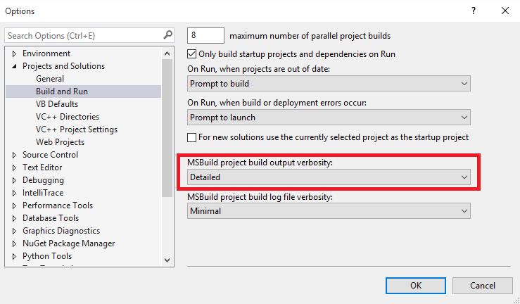A partir daí teremos mais saída na janela de output do build. Logo no começo (talvez pela equipe do VS saber que isso é bem comum) há uma dica de quais arquivos exige o rebuild (você pode fazer isso apenas clicanco em build do projeto que sempre acusa como out of date):
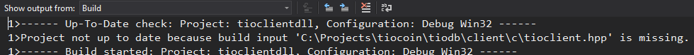Depois de detectado o arquivo faltante, é só removê-lo ou atualizar o path. Esse erro não deve mais acontecer e agora você só precisa compilar uma vez e sair depurando.
# Personal Shopper
Caloni, 2017-02-20 <cinemaqui> <cinema> <movies> [up] [copy]Personal Shopper envolve espiritismo em um mundo impessoal e materialista. Sequer há emoção no filme, embora a história gire em torno do luto de um ente querido. Mas talvez, no final das contas, o que conte mais não é a esperança que haja algo após a morte, mas que haja algo depois de uma vida não vivida, mas meramente suportada.
A história gira e é contada em torno das percepções da personagem de Kirsten Stewart, Maureen Cartwright, que acabou de perder o irmão, Lewis, vítima de um problema genético que, apesar de raro, ela compartilha. Ela trabalha como Personal Shopper para uma modelo famosa, passando seu dia-a-dia indo e vindo a lojas para levar e trazer roupas e acessórios para sua patroa.
Mas não é apenas a doença que ela e seu irmão compartilhavam. Ambos são médiuns, e cada um ao seu modo percebe a presença de forças estranhas. Seu irmão tinha certeza que havia algo "do outro lado", enquanto ela chama sua percepção de algo como uma vibração; de qualquer forma, os dois fizeram um pacto: quem morrer primeiro deve enviar algum sinal para o outro. Agora ela passa algum tempo na casa onde Lewis morava com sua esposa, tanto para tranquilizar os compradores de que não há nada perturbador quanto para esperar pelo sinal.
Curiosamente centrado em uma perda, o universo de Personal Shopper deixa claro que sentimentos não fazem parte da rotina dessas pessoas. Os compradores da casa estão interessados em saber se não haverá problemas para eles (talvez até influenciados pelo terror americano da mansão assombrada, um clichê cutucado pelo filme). A modelo para quem Maureen trabalha conversa sobre a publicidade em torno de um projeto de defesa de gorilas, mas está mais interessada em não cancelar a coletiva com a imprensa do que saber se os animais estão bem (não estão). Enquanto isso seu amante a espera na sala para que ela termine com ele, já que ela está com medo que seu marido saiba do caso. Quando questionado se pelo menos ele gosta dela, ouvimos um não extremamente racional e ponderado. Seu objetivo em estar com ela é apenas carnal.
E carnal também, de certa forma, é o relacionamento entre as roupas da modelo e sua PS, e isso a vai seduzindo aos poucos conforme suas experiências além-vida começam a ficar mais intensas do que ela acreditava ser possível. Ela sente necessidade de vestir as roupas que passam por suas mãos tanto por ser proibido quanto por fazer algo para tentar ser outra pessoa. Ela odeia o que faz. Ela poderia largar tudo isso e ir se encontrar com seu namorado em uma terra exótica (o que praticamente evoca um mundo mais espiritual), mas está aguardando pelo irmão. Essa é sua penitência.
O diretor Olivier Assayas, além de dominar o aspecto do horror em seu filme logo no começo, usa a favor da narrativa, e nunca pelo susto fácil. Quando há algo perturbador primeiro ele aparece na mente da protagonista, depois vemos, ouvimos ou sentimos algo. O jogo de encenação consegue também sempre deixar a dúvida do que vemos (até porque temos apenas apenas a médium como testemunha). Ela é uma cética, mas acredito que ela gostaria de acreditar com todo o resto das forças ainda presentes em seu espírito, ainda vivo, perambulando pelas ruas de Londres a Paris.
E como todo filme de terror bem feito (ainda que seja um drama) o controle de luz é absoluto, especialmente na casa de Lewis. Note como o enquadramento, sempre amplo, permitindo que vejamos um cenário de imersão na vida da personagem, na casa tem menos importância que o jogo de luzes, que indica onde devemos prestar atenção.
Em um jogo narrativo soberbo, sabemos mais sobre a personagem a partir do momento que ela começa a se comunicar com uma pessoa desconhecida. Essa pessoa pode ser o espírito que fez contato na casa de seu irmão. Ela se comunica através de mensagens no celular, e daí nós temos uma ótima metáfora sobre pessoas que vivem no celular, com seus espíritos milhares de anos-luz distantes de seus corpos. Há um ótimo momento dessa brincadeira, quando o desconhecido fala que está observando-a nesse exato momento. Quando ela começa a olhar em volta, todas as pessoas presentes no vagão estão concentradas em seus celulares. Em que momento o mundo dos vivos virou o dos mortos?
Ed Weissman, ou edw519 para os íntimos, é um dos comentaristas mais efusivos, pragmáticos e experientes do Hacker News. Ele tem programado profissionalmente há quase 40 anos. De mainframes a projetos web, a evolução dele passou basicamente pelo dobro de gerações que provavelmente você passou. Ele também já esteve envolvido como sócio/fundador em três empresas, vendendo tanto serviços quanto produtos. Ele trabalhou com centenas de pessoas em mais de mil projetos em mais de um milhão de linhas de código. Ele já compartilhou muitas opiniões com a comunidade, e agora juntou boa parte dessas opiniões em um livro, um ebook, disponível para qualquer um que queira observar alguém que esteve nas trincheiras por muitos anos e não tem medo de dizer o que pensa.
Se quiser ter apenas um gostinho do que vai encontrar lá, leia meus recortes abaixo (tradução minha):
Alguns caminhos são melhores que outros, mas qualquer caminho é melhor que nenhum.
Como hackers, tudo que fazemos ou é plantar sementes ou colhendo. Se você não vê uma colheita hoje é porque você estava plantando sementes.
Quanto eu contrato, eu não estou procurando por uma pessoa ou um recurso. Eu estou procurando por uma solução para meu problema.
O que eu realmente me preocupo é como meu software é usado. E quem o usa. Há um stream infinito de pessoas que precisam de coisas e um stream infinito de problemas para solucionar.
Apenas se mantenha humilde, lembre-se: nós todos estamos apenas a uma batida de cabeça da feliz ignorância.
É muito mais fácil julgar algo que já existe que definir algo que não existe.
Engenharia de software não está morta. É que o processo de depender de modelos antes de iniciar nunca funcionou em primeiro lugar.
A necessidade de frameworks e linguagens de alto nível só se torna aparente quando crescemos tanto que não é possível achar mais hackers experientes o suficiente. Só quando você apela para as massas medíocres que você precisa dessa ajuda.
"Quando apresentado com um crescimento exponencial, lembre-se que as pessoas tendem a superestimar drasticamente o que irá acontecer a curto prazo, mas subestimam profundamente o que acontece sobre longos períodos de tempo." - Ryan McIntyre
"O que nós acreditamos é baseado em nossas percepções. O que nós percebemos depende do que estamos procurando. O que nós estamos procurando depende do que pensamos. O que pensamos depende do que percebemos. O que nós percebemos é o que aceitamos como verdade. O que aceitamos como verdade é nossa realidade." - Gary Zukav
Comece com a resposta, então trabalhe ao contrário.
Nomeie suas variáveis para que qualquer um saiba o que elas são.
Nomeie suas funções para que qualquer um saiba o que elas fazem.
Nunca escreva a mesma linha de código duas vezes. Use funções.
Assuma que o usuário não sabe o que ele quer.
Mesmo que o usuário saiba o que quer, assuma que ele não consiga verbalizar.
O usuário sempre sabe o que ele não gosta. Prototipe frequentemente.
Esteja preparado para cavar quantos níveis de detalhe precisar para entender.
Quando estiver travado em um problema, desligue o computador.
Não ligue o computador a menos que você tenha uma tarefa específica.
Beleza é importante, mas entrega é mais importante.
Nenhuma variável deve ser completamente contida dentro de outra variável.
Todo nome de variável deve ter no mínimo três caracteres de tamanho.
Use a ferramenta certa para o trabalho certo.
Quase qualquer ferramenta pode fazer o trabalho. Algumas são melhores que outras.
Faça benchmarks frequentes para aprender o que acontece por debaixo dos panos.
Tente algo que nunca foi feito. Pode ser mais fácil do que você pensa.
Lembre-se dos padrões que você usou antes. Você irá usá-los novamente.
Mantenha extremamente simples no começo. Complique conforme avança.
Codifique todos os dias.
Como aprender a programar? Ache um cliente com um deadline absurdo. Alcance-o. Repita. Não vai ser bonito, mas você será o tipo de programador que eu iria para a batalha junto: ótimo nas coisas que realmente importam e medíocre nas coisas que não importam.
Eu costumava ser muito desagradável em julgar os outros, "Ela é realmente esperta" ou "Ele é tão estúpido". Então eu aprendi muito com meu primeiro mentor. Ele me ensinou que frequentemente não há muita diferença entre alguém que parece esperto e alguém que não. Talvez ninguém gastou tempo suficiente com um deles. Talvez eles tenham outros desafios, como família, saúde ou circunstâncias. Talvez eles sejam um peixe fora d'água, gastando muito tempo em coisas que não o interessam. Ou talve eles pareçam burros porque eles realmente acreditam que o são. Foi dito a eles tantas vezes que agora eles acreditam.
Finalmente Sênior!
- O que faz um programador sênior? Ótima pergunta. Pergunte para n programadores e você obterá n^2 respostas. Isso pode ser facilmente o assunto para outro post ou até um livro. Saindo do topo da minha cabeça em nenhuma ordem particular:
- entender o problema em mãos antes de escrever qualquer código
- usar a ferramenta certa para o trabalho certo
- seguir padrões aceitos e protocolos sem sacrificar a criatividade
- nomeia variáveis e funções como de fato serão para o próximo programador
- antecipa o que pode dar errado antes de confiar em um depurador ou testes
- entende a arquitetura implícita e como melhor utilizá-la
- nunca escreve o mesmo código duas vezes
- nunca escreve em 150 linhas o que poderia ser escrito em 100
- Código ruim: não-comentado. Medíocre: comentado. Bom: não precisa de comentários.
- entende o ciclo de vida do código inteiro e o escreve para durar
- tem pena da pobre alma que tem que mantê-lo e deixa uma dica ou duas
- escreve de maneira flexível para ser facilmente mudado antes que o projeto termine.
# Um lance à frente (Capablanca)
Caloni, 2017-02-20 <quotes> [up] [copy]"Eu só vejo um lance à frente, mas é sempre o correto."
Jose Raul Capablanca
# A mesma mente (Einstein)
Caloni, 2017-02-20 <quotes> [up] [copy]"Você não pode resolver um problema com a mesma mente que a criou."
Albert Einstein
# O menor problema possível
Caloni, 2017-02-20 <quotes> [up] [copy]"Foque no menor problema possível que você pode resolver cuja solução será potencialmente útil."
David Cohen
# Sem oxigênio
Caloni, 2017-02-20 <quotes> [up] [copy]"Cada momento que você está trabalhando em algo sem estar na arena pública, esse algo está na verdade morrendo, privado do oxigênio do mundo real."
Matt Mullenweb
# Visualizando QString no Visual Studio
Caloni, 2017-02-20 <computer> [up] [copy]O Qt não é um framework que pode apenas ser usado no QtCreator. Através de um projeto bem configurado pelo CMake, por exemplo, é possível ter um projeto que pode ser compilado e depurado tanto nas ferramentas do Qt quanto no Visual Studio. No entanto, na hora de depurar algumas coisas são difíceis de fazer. Por exemplo: como olhar o conteúdo de uma QString?
O Visual Studio utiliza um mecanismo que lembra os comandos bizarros que se usa no WinDbg, mexendo com registradores e tal. Através dessa combinação é possível dizer para o depurador como interpretar determinados tipos de objetos. Ele já vem obviamente pronto para std::string, CString (ATL) e deveria vir com QString, de tão famosa que é. Mas a versão do Visual Studio 2015 não vem. O jeito então é editar diretamente o arquivo onde ficam esses padrões.
; AutoExp.Dat - templates for automatically expanding data
O nome do arquivo é __autoexp.dat__ e ele fica em uma pasta no estilo Program Files, Microsoft Visual Studio, Common7, Packages, Debugger. É melhor você retirar ele dessa pasta antes de sobrescrevê-lo para não ter erro de acesso. Ao abri-lo verá que no começo há vários comentários que explicam como é o funcionamento desse padrão.
; type=[text]<member[,format]>... ; ; type Name of the type (may be followed by <*> for template ; types such as the ATL types listed below). ; ; text Any text.Usually the name of the member to display, ; or a shorthand name for the member. ; ; member Name of a member to display. ; ; format Watch format specifier. One of the following: ; ; Letter Description Sample Display ; ------ -------------------------- ------------ ------------- ; d,i Signed decimal integer 0xF000F065,d -268373915 ; u Unsigned decimal integer 0x0065,u 101 ; o Unsigned octal integer 0xF065,o 0170145 ; x,X Hexadecimal integer 61541,X 0X0000F065 ; l,h long or short prefix for 00406042,hx 0x0c22 ; d, i, u, o, x, X ; f Signed floating-point 3./2.,f 1.500000 ; e Signed scientific-notation 3./2.,e 1.500000e+000 ; g Shorter of e and f 3./2.,g 1.5 ; c Single character 0x0065,c 'e' ; s Zero-terminated string pVar,s "Hello world" ; su Unicode string pVar,su "Hello world" ; ; For details of other format specifiers see Help under: ; "format specifiers/watch variable"
Felizmente (e também obviamente) o pessoal do Qt já fez uma entrada na wiki que explica como fazer para interpretar corretamente uma QString. Eles mesmos admitem que a coisa ficou difícil desde a última versão (Qt 5), mas ainda assim é possível. E, se tudo falhar, ainda é possível usar a janela de Watch:
(char*)str.d + str.d->offset,su
Mas não foi o caso dessa vez. Tudo funcionou perfeitamente assim que incluí os valores da Wiki logo no começo da sessão __Visualizer__.
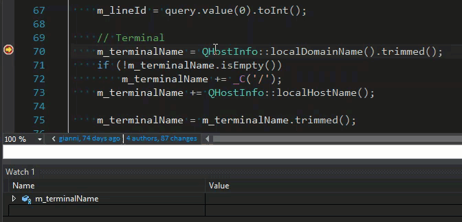# Silêncio
Caloni, 2017-02-22 <cinemaqui> <cinema> <movies> [up] [copy]Martin Scorsese volta ao tema religioso depois de longo hiato (seu último foi A Última Tentação de Cristo, na década de 80) em uma obra que lida com sofrimento cristão em um nível quase que metafísico. Para isso viajamos ao Japão feudal e a miséria de um povo, onde encontraremos padres jesuítas dispostos a tudo para converter fiéis, mesmo que estes fiéis e os próprios padres estejam sendo sumariamente torturados e executados.
Este é um filme que enxerga a realidade principalmente pela ótica cristã, e apenas Scorsese conseguiria dedicar tanta paixão à causa. Vindo de família católica, sua história demonstra até que ponto e de quais maneiras a fé cristã atingia povos ainda isolados da religião de um salvador e um deus único, nem que para isso fosse necessário sacrificar a própria vida. E há, acredite, vários e vários sacrifícios. A morte é uma constante em todo o longa. O filme dedica um bom tempo convencendo o espectador através do tom cerimonioso e absolutamente honesto dos padres de que naquela época a fé era a verdade em si, e espalhar a verdade é uma questão de salvamento de almas, ou seja, não é possível deixar essa missão sem um bom motivo.
Estamos no século 17, quando as grandes navegações, além de expandir o comércio mundial, atravessam fronteiras culturais e religiosas. Países católicos como Espanha e Portugal começam a pregar incessantemente nesse novo "mercado". Tanto que é através de um tom amoroso e cuidadoso com que dois padres jesuítas, Rodriguez e Garupe, decidem ir ao Japão averiguar se é verdade que seu mentor, Padre Ferreira, havia negado a fé cristã e se rendido ao budismo.
Apesar de moroso e fundado em diálogos, rituais e provas de fé, a simbologia visual de Silêncio é arrebatadora. Vemos os padres cruzarem uma escadaria e um navio atravessar o mar em plongé (com a câmera exatamente em cima do cenário), como se Deus realmente observasse seus fiéis, embora, como dito pelo protagonista, Padre Rodriguez, em um silêncio ensurdecedor.
Esse silêncio se torna cada vez mais incompreendido por ele e cada vez mais insuportável conforme ele acompanha cristãos sendo torturados até a morte, crucificados, queimados, afogados. É uma história de provação do começo ao fim, com cenas fortes porque são necessárias, e se você teve convulsões em assistir A Paixão de Cristo talvez deva ir preparado ao cinema dessa vez, e mesmo que aqui os sacrificados sejam japoneses, se você for cristão deveria aceitá-los como convertidos, assim como os romanos que eram comidos por leões no Coliseu, o que torna tudo mais dramático para pessoas crentes.
Há diversos elementos no filme em uma história bem amarrada que tornam o roteiro de Silêncio parado, porém ao mesmo tempo fascinante. Não se trata de um filme fácil também para pessoas impacientes, e de certa forma é uma provação para o próprio espectador acompanhar o tom de desilusão, desesperança e desespero crescentes. No entanto, as discussões teológicas que acompanham o filme, protagonizadas em geral por um inquisitor japonês que faz o advogado do diabo caricato e eficiente, são momentos tematicamente arrebatadores. Aliás, o roteiro, escrito por Jay Cocks e o próprio Scorsese baseados no romance de Shûsaku Endô, chega a ser tímido ou até confuso nessa questão, pois evita entrar muito nos detalhes de cada uma das duas religiões, apenas em um raro momento. O resto é pura simbologia.
E entre esses símbolos o mais recorrente é o guia que sempre volta a atazanar Padre Rodriguez para novamente se confessar; é figura recorrente e até necessária na mitologia cristã. Se trata do fraco, que sempre peca, mas que sempre será perdoado nessa religião. É uma crítica ácida para os que veem a ironia da situação em que enquanto o padre passa por inúmeras provações ele constantemente perdoa um "pecador profissional" (que, de acordo com a própria religião, tem o mesmo direito ao paraíso que qualquer um que tenha pecado menos).
O título de "Silêncio" ganha uma rima temática no filme, pois, sem música, os únicos sons que ouvimos são da natureza, e as canções saem da boca das próprias pessoas. E a fotografia, seja quente ou fria, ressalta da mesma forma a natureza em torno dos personagens, seja um nevoeiro eterno, uma chuva densa e igualmente perene, ou o lindo céu estrelado de uma noite tranquila. Os enquadramentos do filme apenas reforçam o tom sagrado e solene, pois fazem questão de exibir todos os elementos dispostos como um quadro mesmo, tentando imortalizar um momento da iconografia cristã.
E, como sempre, a religião do sofrimento depende tanto da dor que ela se torna um personagem à parte de toda a via crucis de seu herói, que Scorsese faz questão de filmar como um evento histórico rebuscado.
# Olhar Instigado
Caloni, 2017-02-23 <cinemaqui> <cinema> <movies> [up] [copy]Nos primeiros minutos de Olhar Instigado é possível perceber um controle narrativo que determina com precisão qual será o tom no filme inteiro. Será um filme com movimento, cortes rápidos, montagem fluida e trilha sonora empolgante. Para um documentário isso já é muito mais que o medíocre esquema de pessoas sentadas falando.
Porém, além da competência técnica da dupla de diretores Guilherme Moraes e Chico Gomes e seus respectivos protagonistas da vida real Alexandre Orion, Bruno Locuras e André Monteiro (sem contar seu excelente montador, Oswaldo Santana), este é um filme que promete entregar, não apenas como seu título sugere ou promete, um olhar instigado (e consequentemente instigante) sobre a megalópole São Paulo, maior cidade do Brasil e uma das maiores do mundo, mas também ideias instigantes, que vão além do senso comum.
E isso, infelizmente, o filme apenas promete. Apresentando como heróis artistas que intervém na paisagem urbana, seja como uma espécie de Bansky ao desenhar em um paredão no bairro periférico do Grajaú uma criança gigante brincando com casebres da favela, ou algo mais temático e simbólico, como a manipulação inventiva da fuligem acumulada de um túnel em caveiras temporárias, é difícil entender algo diferente do que pretendem exceto uma palavra: indignação.
Agora, indignados deveriam ficar o resto das pessoas que convivem na mesma cidade e que discordam dessa visão, muitos inclusive proprietários das construções danificadas. Não vemos isso. Nessa versão alternativa da realidade, existe apenas o ato heróico sem consequências. Exceto quando dois garotos são mortos pela polícia, quando daí eles realmente têm motivos para indignação. Porém, o filme não é sobre violência direta, mas indireta. Chamemos de coletivismo ou democracia, como eles mesmos chamam qualquer tipo de lógica que ignore indivíduos: a "sociedade".
Nessa visão distorcida já conhecida por todos, a versão da realidade onde há opressores e oprimidos, qualquer "esquerdaloide" poderia opinar. Não existe nada novo e muito menos instigante nessas ideias, que ficam muito aquém do que o filme entrega como produção e narrativa. Sempre disposto a observar a cidade por outro ângulo, ou em planos-detalhe curiosos ou até mesmo em outra velocidade -- e o filme é verdadeiramente inovador nesse sentido, ainda mais na cidade para onde ele aponta suas lentes -- é decepcionante constatar que essas pessoas não possuem, de fato, nada a contribuir para a "sociedade". Pelo contrário, se tratam de valores invertidos, que ignoram a quantidade esmagadora de trabalho -- mental e braçal -- para criar os recursos e as paredes que são maculadas soturnamente pelas avenidas mais esquecidas, mas ainda assim enxergam o trabalho frustrante de um artista em construir um mecanismo complexo como reflexão a respeito da poluição e falta de água na região.
Dessa forma temos um trabalho competente que se transforma tematicamente em mais do mesmo. Com os valores errados como guia das ações dos cineastas (diretores e roteiristas) não há brilhantismo técnico que o suporte. Assim como, por analogia, por mais genial que seja um arquiteto, um engenheiro e a mão de obra por trás da construção de um edifício, nada resiste ao vandalismo fácil e rancoroso do dia-a-dia.
# Insubstituível
Caloni, 2017-02-24 <cinemaqui> <cinema> <movies> [up] [copy]Insubstituível é uma tentativa pálida e sem foco em explorar as dores da medicina, de passar a vida salvando vidas, e se preocupando com elas. Nos apresenta Jean-Pierre (François Cluzet), o médico do interior que descobre que tem câncer, e Nathalie (Marianne Denicourt), a médica que vem para ajudá-lo a atender seus pacientes durante seu tratamento.
O filme se espalha em torno da rotina exaustiva de Jean-Pierre ao mesmo tempo que mostra como ele conhece, depois de 20 anos exercendo a profissão, as particularidades de cada paciente seu. Em um primeiro momento ele protege-os da novata, não como uma tentativa de se manter no controle, mas como uma forma sincera e honesta de demonstrar que ele é, conforme o título sugere, insubstituível para a comunidade.
A atuação de François Cluzet se torna sutil demais para o papel, algo que não fez muita diferença em Intocáveis graças à presença de espírito de Omar Sy. Porém, aqui Marianne Denicourt, que deveria ser a versão mais leve e bem-humorada da parceria não dá conta do recado, já que ela precisa constantemente passar pelo crivo que colocou sobre si mesma. Enfermeira por dez anos e tendo cursado medicina tardiamente, Nathalie precisa provar não só que é capaz de gerar um diagnóstico, mas que consegue ganhar a confiança das pessoas que tratam com Jean-Pierre por tanto tempo.
O que se torna uma tarefa lenta e gradual, mas basicamente acessível. Até aí, nada de mais. Da mesma forma, a doença de Jean-Pierre não se torna necessariamente um problema do ponto de vista do filme conforme a colega avança. Ele não tem carisma o suficiente para competir com ela, então ele morrendo ou não, não fará diferença na história. Até porque, ao analisarmos o que está em jogo em "Insubstituível" é muito mais a comunidade de pacientes do que os médicos em si. E estes, seja por Nathalie ou por Jean-Pierre, sempre aparecem conseguindo ser atendidos, de um jeito ou de outro.
O roteiro escrito a quatro mãos prefere em vez de usar seus personagens como ligação do espectador com a trama exibe uma miscelânea de tipos diferentes de pessoas sendo tratadas pelo consultório particular. E aqui, mais uma vez, não há conflito principal, mas uma série de mini-dramas do cotidiano. Se trata da menina que é abusada pelo seu namorado, do garoto que é tratado como deficiente mental mas pode ter autismo, do senhor de 92 anos que pretende morrer em paz em sua própria casa com seu cachorro do que internado e confuso. Retirando-se o drama, apenas um passeio pelo interior da França. Uma análise comunitária sem conseguir nos unir a ninguém em específico.
E, se formos pensar, isso mais ou menos resume o trabalho de um médico. Nunca podendo estar disposto a criar laços com seus pacientes, ele é obrigado a se preocupar constantemente em qual a melhor forma de tratá-los sem sentir nada pessoal. E isso se torna sintomático para Pierre, já que ele não consegue sequer se relacionar de acordo, contando sobre seu problema de saúde, com a própria colega, que em breve poderá substituí-lo.
Já nos aspectos técnicos, a escolha da trilha sonora não poderia ser pior. Centrada em músicas empolgadas, dá impressão de estarmos vivendo uma aventura, quando o drama é pesado, e nunca dá uma pausa. Aliás, se trata de um péssimo marcador de tempo, junto do próprio filme, que consegue dizer apenas vagamente se passou um ano ou alguns meses. Já a fotografia é belíssima, e justamente por isso não tem muito a dizer. Há um mini-discurso de Pierre resumindo seu trabalho como lutar contra a natureza. Mas o que vemos a todo momento é sua beleza em volta. Afinal de contas, é o interior da França.
A verdade é que os personagens de Insubstituível não se importam o suficiente para serem notados pelo espectador. A sutileza aqui dá vazão a um filme simpático e esquecível. O que é uma pena, se constatarmos que há algo de muito sombrio, desgastante e deprimente na rotina de um médico, ainda mais convivendo com seus pacientes por décadas. Gostaria de ver mais uma história sobre isso, e não o drama comum da luta diária contra a força incomensurável da natureza, ganhando espaço a cada artéria aberta e a cada tumor que se espalha.
# Life, Animated
Caloni, 2017-02-25 <cinemaqui> <cinema> <movies> [up] [copy]O documentário "Life, Animated" conta a incrível história de Owen Suskind, diagnosticado como autista aos três anos de idade, incapaz de falar e de ações motoras minimamente coesas e que através dos filmes da Disney abriu um portal surpreendente de comunicação com o mundo externo. Apenas por esta premissa este filme vale cada segundo de nossa atenção.
E por quê? Simplesmente porque hoje o mundo enfrenta um desafio global intransponível. Estamos cada vez mais conectados e paradoxalmente desconectados. A comunicação não é mais um desafio tecnológico, mas fundamentalmente humano. E conseguir trazer os autistas para mais perto de nossa tribo mundial está entre um dos objetivos mais nobres e úteis para a sociedade.
Owen é um caso a ser estudado, um exemplo de como a atenção e carinho de pessoas próximas aos autistas -- no caso, os pais -- conseguiu ser a diferença mínima que alterou profundamente seu futuro.
E isso, infelizmente, o documentário não torna um de seus pilares. Ele prefere o caminho fácil de uma história emocionante: deixe as pessoas falarem, se emocionarem. Use uma narrativa simplista, pavimentada de desenhos que ilustrem o que se passa pela cabeça de Owen. Com isso o filme se rebaixa ao seu nível, e não permite que haja nada mais na história que a pequena introdução que fiz. Essa introdução -- autista usa Disney para se comunicar -- é repetido à exaustão sem acrescentar nada mais. Acompanhamos Owen se formar no colégio, ir morar sozinho, dar um discurso na França e ser aplaudido copiosamente, e nada disso sequer se compara à grande conquista daquela família, que já havia perdido as esperanças quando Owen fez três anos de idade.
A narrativa conduzida pelo diretor Roger Ross Williams baseado em um livro escrito pelo pai de Owen nunca surpreende, sendo uma sucessão de pequenas reportagens televisivas esteticamente enfadonhas, burocráticas e repetitivas. Lá vem mais um desenho que irá mostrar o que Owen está pensando. Agora Owen está caminhando na praia com o irmão. Agora os pais vão contar mais um detalhe irrelevante e a mãe irá escorrer mais uma lágrima.
Sem qualquer paixão pelo projeto, os cineastas andam à deriva e possuem menos senso crítico do que o próprio Owen desenvolveu. Em certo momento há um revés inesperado na vida do jovem, que é tratado como um desastre pela família, uma calamidade, e que logo é racionalizado pelo próprio Owen. Não há drama na história exceto o forçado artificialmente pelo filme, que insiste em sua premissa por cansativos 90 minutos.
Certamente há algo a se aprender com os autistas. Isso já está claro para o mundo e Owen é um brilhante exemplo. Porém, não é se colocando em seu próprio nível histérico de enxergar a realidade ou superestimar suas capacidades que os objetivos de comunicação com essas pessoas especiais e dignas de cuidado serão alcançados. Certamente não com um filme que emula o pior na Disney: suas esquisitices assépticas e simplificadas de como a vida funciona.
# Atalhos no terminal do Linux/Unix
Caloni, 2017-02-27 [up] [copy]Há pouca coisa que você pode fazer para manipular a linha de comando que está digitando em um terminal do Windows. Isso faz sentido. O terminal da Microsoft é apenas um resquício do MS-DOS, que foi herdado pelas inúmeras versões do Windows para que desenvolvedores e suporte pudessem executar alguns comandos não disponíveis pelo clique de um mouse. Já no Unix a história é inversa. Durante tantas décadas sendo usado, o sistema Unix, hoje, em sua mais nova reencarnação, Linux, foi acumulando diferentes teclas de atalho para conseguirmos refazer, desfazer e fazer melhor a montagem dos comandos digitados na linha de comando. Um sistema bash padrão já deve ter implementado o mínimo que você precisa para sobreviver na linha de comando. Aparentemente esse é um conhecimento tão bem divulgado pela comunidade que ninguém se dá ao trabalho de escrever um artigo sobre isso. Eu fiz algumas pesquisas uns tempos atrás e cheguei na seguinte lista, que tem muito mais do que eu preciso, e que seria bom aprender, nem que fosse aos poucos.
- __Ctrl + r__ - navigate previous commands
- __Ctrl + a__ - go to the start of the command line
- __Ctrl + e__ - go to the end of the command line
- __Ctrl + k__ - delete from cursor to the end of the command line
- __Ctrl + u__ - delete from cursor to the start of the command line
- __Ctrl + w__ - delete from cursor to start of word (i.e. delete backwards one word)
- __Ctrl + y__ - paste word or text that was cut using one of the deletion shortcuts (such as the one above) after the cursor
- __Ctrl + xx__ - move between start of command line and current cursor position (and back again)
- __Alt + b__ - move backward one word (or go to start of word the cursor is currently on)
- __Alt + f__ - move forward one word (or go to end of word the cursor is currently on)
- __Alt + d__ - delete to end of word starting at cursor (whole word if cursor is at the beginning of word)
- __Alt + c__ - capitalize to end of word starting at cursor (whole word if cursor is at the beginning of word)
- __Alt + u__ - make uppercase from cursor to end of word
- __Alt + l__ - make lowercase from cursor to end of word
- __Alt + t__ - swap current word with previous
- __Ctrl + f__ - move forward one character
- __Ctrl + b__ - move backward one character
- __Ctrl + d__ - delete character under the cursor
- __Ctrl + h__ - delete character before the cursor
- __Ctrl + t__ - swap character under cursor with the previous one
- __Ctrl + l__ - clean the screen (history back)
- __Ctrl + z__ - put in background (fg restores it)
- __Ctrl + c__ - cancel current command
- __Ctrl + d__ - exit the current shell
# Travelers
Caloni, 2017-02-28 <cinema> <series> [up] [copy]Viagem no tempo, física quântica, mulheres bonitas e gostosas: uma fórmula que geralmente merece dar uma olhada, para diversos fãs, de diferentes conteúdos. No caso da primeira temporada de Travelers, da Netflix, a química entre esses elementos oscila de maneira irregular, quase sempre frustrando ideias mais ambiciosas e quase sempre se rendendo ao juvenil politicamente correto. Quer dizer, no futuro os animais são nossos amigos e as pessoas passam mal em ver bacon? Fala sério!
A ideia compartilhada por um batalhão de roteiristas (e dirigida por outro tanto) é que no futuro há uma catástrofe que irá destruir a humanidade (ou algo que o valha), mas há também tecnologia suficiente para enviar consciências de volta ao tempo, o que move uma organização coordenada por uma figura conhecida como Diretor que envia equipes prontas para cumprir cegamente as mais diferentes missões. Como os viajantes do tempo são todos politicamente corretos e há alguns protocolos que não podem ser quebrados (o que eu mais gosto é o Protocolo 2: "o futuro fica no passado") eles incorporam suas consciências em pessoas que, de acordo com os registros que possuem do passado, já iriam morrer em poucos segundos. Entre os protocolos há a regra de não alterar muito o presente em que vivem para não impactar o futuro, exceto as missões entregues às equipes e o fato das pessoas que iriam morrer continuar fazendo parte da vida de sua família e conhecidos.
Isso gera uma questão poderosa, mas pouco explorada. Há duas pessoas casadas na equipe que acompanhamos. Seus marido e esposa iriam se tornar viúvos em um dia onde coincidentemente um viajante no tempo toma o corpo de seu companheiro(a). Isso faz com que exista um recomeço entre eles. Curiosamente os dois viajantes são também um casal no futuro. Ou seja, de uma maneira econômica, formam-se dois triângulos amorosos com apenas quatro pessoas (seis, se você contar os mortos). De qualquer forma, este não é o foco.
O foco do criador da série, Brad Wright, é fazer surgir mais um thriller policial com assuntos que interessam os assinantes da Netflix, e dessa forma criar mais conteúdo baseado nas estatísticas da empresa. Viagens no tempo está entre os meus temas favoritos, e geralmente rende altas discussões. Esse é o lado bom da série. O lado ruim é que sua história quase sempre se rende ao clichê, preferindo sempre se manter como um thriller policial com alguns traços de ficção científica.
O fato é que a série consegue pelo menos absorver nossa atenção, pois de uma forma ou de outra, nos preocupamos com a equipe de viajantes, mesmo que estejamos whatever para o futuro da humanidade. Afinal de contas, quem quer viver em um mundo onde o bacon é mal visto?
[2017-01] [2017-03]